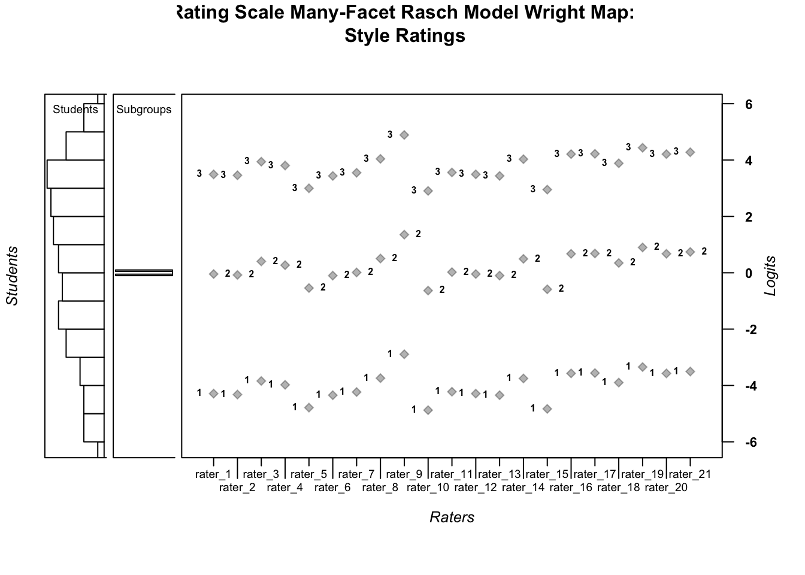
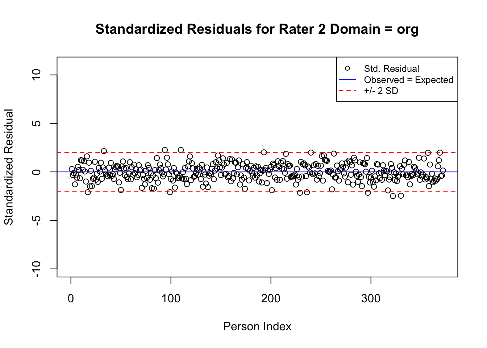
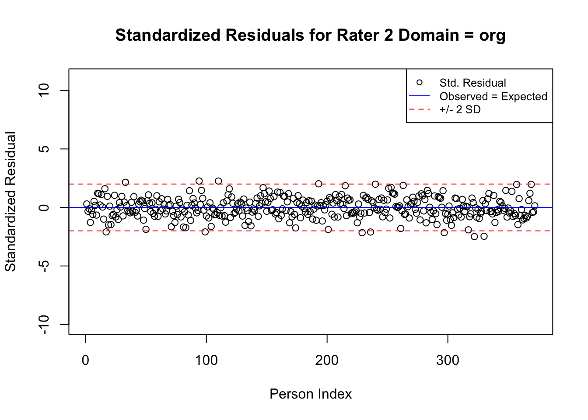
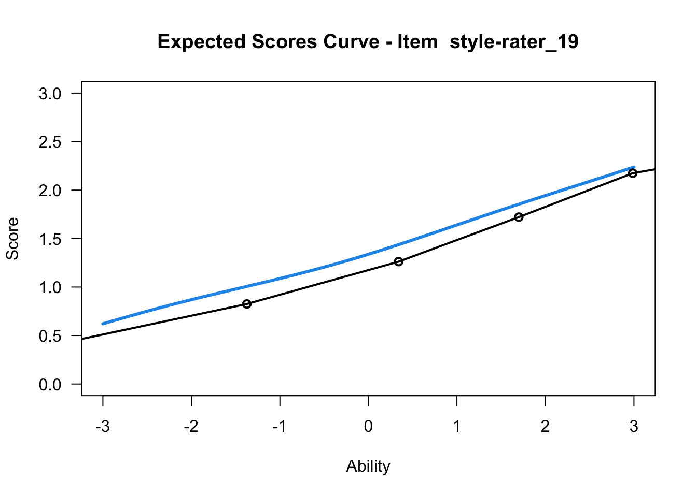
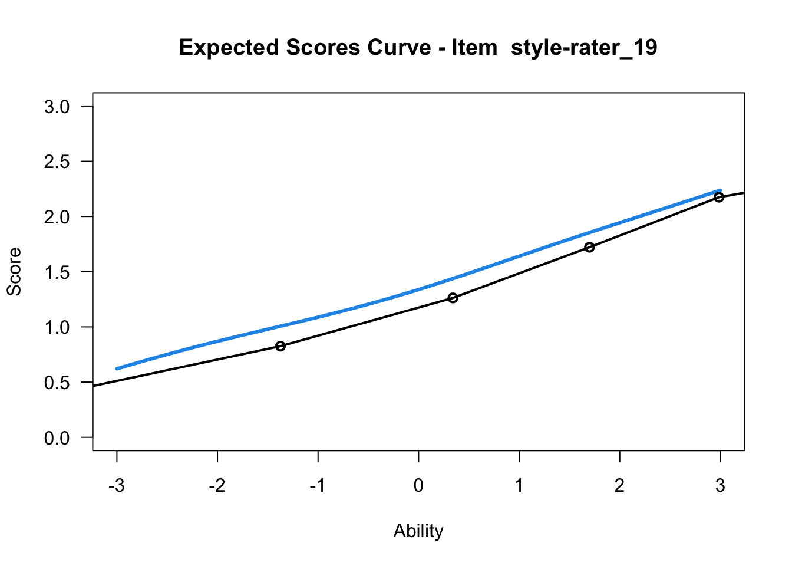
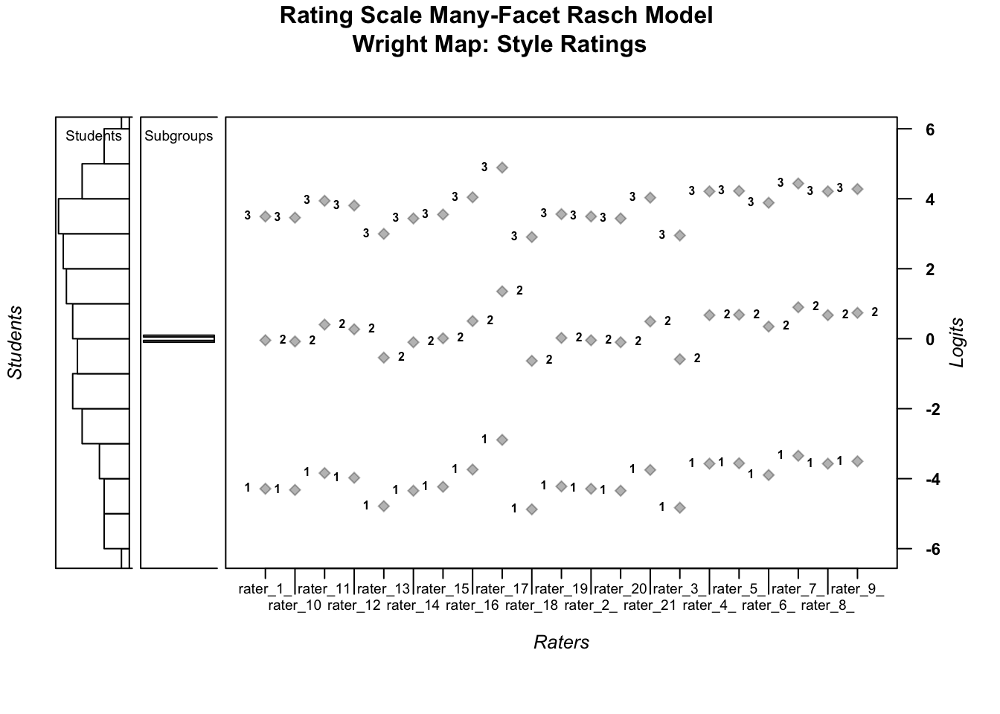

Chapter 6 Many Facet Rasch Model
This chapter provides a basic overview of the Many-Facet Rasch Model (MFRM) (John M. Linacre 1989), along with guidance for analyzing data with the MFRM using R (R Core Team 2019). We use the TAM package (Robitzsch, Kiefer, and Wu 2021) for all of the analyses in this chapter. In the first example, we demonstrate how to apply the MFRM to multi-faceted data that are stored in wide format (one row for each subject). Then, we demonstrate how to apply the MFRM to multi-faceted data that are stored in long format (multiple rows for each subject). After the analyses are complete, we present an example description of the results from one example. The chapter concludes with a challenge exercise.
Overview of the Many-Facet Rasch Model
The MFRM (John M. Linacre 1989) is an extension of the Rasch family of models that allows researchers to include additional variables of interest (“facets”) besides items and persons. Bond, Yan, and Heene (2020) defined facets as “aspects of the measurement process that “routinely and systematically interpose themselves between the ability of the candidates and the difficulty of the test” (p. 145). Examples of variables that could be modeled as facets include raters in a constructed-response assessment, participant demographic variables (e.g., gender, race/ethnicity, best language), item type, or domains in an analytic scoring rubric for constructed-response items.
A general equation for the MFRM is:
\[\begin{equation}\tag{6.1}\ln\left(\frac{P_{n(x=k)}}{P_{n(x=k-1)}}\right)=\theta_{n}-\sum_{\text {facets }}\varepsilon-\tau_{k}\end{equation}\]
In Equation 6.1, \(\theta\) is person ability and \(\tau_k\) is the rating scale category threshold, which can be modified to reflect different variations on the Rasch model (e.g., the PC model) as needed. \(\Sigma\) facets \(\epsilon\) is a linear combination of facets that are specific to each modeling context. For example, facets fora MFR model analysis of a performance assessment could include raters and domains. According to Equation 6.1, the probability for an observation in category \(k\), rather than in category \(k-1\) for Person \(n\) is modeled as the difference between the location of Person \(n\) , the location of the researcher-specified facets, and the difficulty associated with providing a response in category \(k\).
Researchers can specify formulations of the MFR model to extend the dichotomous Rasch model (see Chapter 2) the Rating Scale (RS) model (see Chapter 4), the Partial Credit model (see Chapter 5), as well as other Rasch models (e.g., the binomial trials model and the Poisson counts model (Wright and Mok 2004).
Rasch Model Requirements
The MFRM shares the requirements for unidimensionality, local independence, and invariance that we discussed in Chapter 2 for the dichotomous Rasch model. In practice, researchers should evaluate item responses for evidence that they approximate Rasch model requirements before examining model estimates in detail. Chapter 3 included details about model-data fit analysis procedures that can also be applied to the MFRM.
6.1 Running the MFRM with Wide-Format Data in TAM Package
In the next section, we provide a step-by-step demonstration of a MFRM analysis using the Test Analysis Modules or TAM package (Robitzsch, Kiefer, and Wu 2021) for R. We encourage readers to use the example data set for this chapter that is provided in the online supplement to conduct the analysis along with us.
For this first example, we use a subset of the writing assessment data that only includes students’ scores related to the style of their writing. In the second example in this chapter, we use students’ scores related to all four domains.
Prepare for the Analyses
Use the following code to get started with the TAM package by installing it and loading it into your R environment.
# install.packages("TAM")
library("TAM")We will also use the WrightMap package (Irribarra and Freund 2014).
# install.packages("WrightMap")
library("WrightMap")Finally, we will use the psych package (Revelle 2021).
# install.packages("psych")
library("psych")Now that we have installed and loaded the packages to our R session, we are ready to import the data. We will use the function read.csv() to import the comma-separated values (.csv) file that contains the data for the first example. We encourage readers to use their preferred method for importing data files into R or R Studio.
Please note that if you use read.csv() to import the data, you will first need to specify the file path to the location at which the data file is stored on your computer or set your working directory to the folder in which you have saved the data.
First, we will import the data using read.csv() and store it in an object called style.
style <- read.csv("style_ratings.csv")The style ratings file is in wide format, because there is one row for each of the 372 unique students. We can see this structure by printing the first six rows of the data frame object to our console using the head() function.
head(style)## student language rater_1 rater_2 rater_3 rater_4 rater_5 rater_6 rater_7
## 1 3 1 2 2 2 2 3 3 1
## 2 7 1 2 3 2 3 1 1 1
## 3 11 1 2 2 2 2 2 3 2
## 4 15 1 0 0 0 1 0 0 1
## 5 20 1 1 1 1 2 2 1 1
## 6 24 2 0 0 0 0 0 0 0
## rater_8 rater_9 rater_10 rater_11 rater_12 rater_13 rater_14 rater_15
## 1 2 2 2 2 2 1 1 2
## 2 2 1 2 3 3 2 1 1
## 3 2 2 2 2 2 2 2 2
## 4 0 0 0 0 1 1 0 0
## 5 1 1 1 1 2 1 0 1
## 6 0 0 0 0 0 0 0 0
## rater_16 rater_17 rater_18 rater_19 rater_20 rater_21
## 1 2 2 1 1 2 1
## 2 2 1 2 2 1 2
## 3 2 2 2 2 2 1
## 4 0 1 0 0 0 0
## 5 1 1 1 1 1 2
## 6 0 1 0 0 0 0Next, we will explore the data using descriptive statistics using the summary() function.
summary(style)## student language rater_1 rater_2
## Min. : 3.0 Min. :1.000 Min. :0.00 Min. :0.000
## 1st Qu.: 392.0 1st Qu.:1.000 1st Qu.:1.00 1st Qu.:1.000
## Median : 782.0 Median :2.000 Median :2.00 Median :2.000
## Mean : 784.3 Mean :1.532 Mean :1.68 Mean :1.688
## 3rd Qu.:1171.2 3rd Qu.:2.000 3rd Qu.:2.00 3rd Qu.:2.000
## Max. :1574.0 Max. :2.000 Max. :3.00 Max. :3.000
## rater_3 rater_4 rater_5 rater_6
## Min. :0.000 Min. :0.000 Min. :0.000 Min. :0.000
## 1st Qu.:1.000 1st Qu.:1.000 1st Qu.:1.000 1st Qu.:1.000
## Median :2.000 Median :2.000 Median :2.000 Median :2.000
## Mean :1.573 Mean :1.605 Mean :1.798 Mean :1.694
## 3rd Qu.:2.000 3rd Qu.:2.000 3rd Qu.:3.000 3rd Qu.:2.000
## Max. :3.000 Max. :3.000 Max. :3.000 Max. :3.000
## rater_7 rater_8 rater_9 rater_10 rater_11
## Min. :0.000 Min. :0.000 Min. :0.000 Min. :0.00 Min. :0.000
## 1st Qu.:1.000 1st Qu.:1.000 1st Qu.:1.000 1st Qu.:1.00 1st Qu.:1.000
## Median :2.000 Median :2.000 Median :1.000 Median :2.00 Median :2.000
## Mean :1.667 Mean :1.548 Mean :1.347 Mean :1.82 Mean :1.664
## 3rd Qu.:2.000 3rd Qu.:2.000 3rd Qu.:2.000 3rd Qu.:3.00 3rd Qu.:2.000
## Max. :3.000 Max. :3.000 Max. :3.000 Max. :3.00 Max. :3.000
## rater_12 rater_13 rater_14 rater_15 rater_16
## Min. :0.00 Min. :0.000 Min. :0.000 Min. :0.000 Min. :0.000
## 1st Qu.:1.00 1st Qu.:1.000 1st Qu.:1.000 1st Qu.:1.000 1st Qu.:1.000
## Median :2.00 Median :2.000 Median :2.000 Median :2.000 Median :1.000
## Mean :1.68 Mean :1.694 Mean :1.551 Mean :1.809 Mean :1.508
## 3rd Qu.:2.00 3rd Qu.:2.000 3rd Qu.:2.000 3rd Qu.:2.000 3rd Qu.:2.000
## Max. :3.00 Max. :3.000 Max. :3.000 Max. :3.000 Max. :3.000
## rater_17 rater_18 rater_19 rater_20
## Min. :0.000 Min. :0.000 Min. :0.000 Min. :0.000
## 1st Qu.:1.000 1st Qu.:1.000 1st Qu.:1.000 1st Qu.:1.000
## Median :2.000 Median :2.000 Median :1.000 Median :2.000
## Mean :1.505 Mean :1.586 Mean :1.454 Mean :1.508
## 3rd Qu.:2.000 3rd Qu.:2.000 3rd Qu.:2.000 3rd Qu.:2.000
## Max. :3.000 Max. :3.000 Max. :3.000 Max. :3.000
## rater_21
## Min. :0.000
## 1st Qu.:1.000
## Median :2.000
## Mean :1.492
## 3rd Qu.:2.000
## Max. :3.000From the summary of style, we can see there are no missing data. In addition, we can get a general sense of the scales, range, and distribution of each variable in the data set. For example, we can see that the data include student identification numbers, a language subgroup variable, and ratings from 21 raters. Student identification numbers range from 3 to 1574. There are two language subgroups: Subgroup 1 (language = 1) indicates that students’ best language is a language other than English, and subgroup 2 (language = 2) indicates that students’ best language is English. The minimum rating from each rater was \(x = 0\), and the maximum rating was \(x = 3\).
Please note that the TAM package requires that the lowest observation for item responses is equal to zero. In our data, this property is already present. If the lowest category is something other than zero, the analyst will need to re-code the responses as we have done in previous chapters.
Specify Model Components
Now, we are ready to run the MFRM on the style ratings. Because the MFRM equation is researcher-specified, we need to define the components of the model. To do this, we will create an object called facets in which we specify the facets in the model. By default, the TAM package treats the variables that make up the columns of our item response matrix as an “item” facet. In our example, raters function as pseudo-items. Accordingly, raters make up the first facet in our analysis. Our second facet will be student language subgroups. We specify this facet and save it in a data frame object called facets. We specified drop = FALSE because the data frame only includes one column.
facets <- style[ , "language", drop = FALSE]Next we need to identify the indicator variable for the object of measurement (i.e., subject). In our example, students are the object of measurement. We will save the student identification numbers in a vector called students.
students <- style$studentFinally, we need to specify the response matrix. We do so by extracting the raters’ scores for each student to a data frame object called ratings.
ratings <- subset(style, select = -c(student, language))Next, we need to specify the formula for our MFRM. For the first example, we will use a rating scale model specification of the MFRM. This means that we will constrain the threshold parameters to be equal across raters. The model is specified as follows:
\[\begin{equation}\tag{6.2}\ln\left(\frac{P_{n j i(x=k)}}{P_{n j i(x=k-1)}}\right)=\theta_{n}-\gamma_{j}-\lambda_{i}-\tau_{k}\end{equation}\]
In Equation 6.2, \(\theta_n\) is defined as in Equation 6.1. \(\gamma_j\) is the logit-scale location for student language subgroup \(j\), \(\lambda_i\) is the logit-scale location for rater \(i\), and \(\tau_k\) is the logit-scale location at which there is an equal probability for a rating in category \(k\) and category \(k-1\). The subgroup facet (\(\gamma_j\)) reflects the overall location of students in subgroup \(j\), where higher locations indicate higher levels of writing proficiency, and lower locations indicate lower levels of writing proficiency. The rater facet (\(\lambda_i\)) reflects the severity level of individual rater \(i\), where higher locations mean that the rater is more severe, and requires higher levels of writing proficiency before giving high ratings to student performances. Lower rater locations indicate relatively lenient raters, who readily give high ratings to student performances.
We specify the MFRM from Equation 6.2 in an object for use with TAM as follows. First, we specify a name for the model object (style_RS_MFRM), which is defined using the tilde symbol (~), followed by the facet names. As a reminder, the model must include a facet named item; in our example, the item facet is made up of raters. We also include the student language subgroup (language) as a facet. Finally, we specify step to indicate the RS model. The components of the model are separated by addition signs (+) because the facets are additive. We will use interactions in a MFRM later in this chapter.
style_RS_MFRM <- ~ item + language + stepRun the RS-MFRM
Now we can run our RS-MFRM. We do so using the tam.mml.mfr() function, in which we specify the response matrix (resp=), our specified facets (facets=), the model equation (formulaA=), and the identification numbers for the object of measurement (pid=).
RS_MFR_model <- tam.mml.mfr(resp = ratings, facets = facets, formulaA = style_RS_MFRM, pid = students, constraint = "items", verbose = FALSE)Overall Model Summary
After we run the model, we will request a summary of the model results using the summary() function.
summary(RS_MFR_model)The summary of the MFRM is lengthy. Included among the output are several details that may be important for some analyses, including details about each iteration, global model-fit indicators (e.g., deviance, log-likelihood, AIC, BIC) and an estimate of person separation reliability (EAP Reliability). We will focus our interpretation on the location estimates for the student, subgroup, rater, and threshold parameters.
Facet Results
Next, we will save the parameter estimates from the RS-MFRM in a data frame object called facet.estimates. This object includes the location estimates and standard errors for raters, student subgroups, and thresholds. Locations estimates are labeled xsi and standard errors are labeled se.xsi.
facet.estimates <- RS_MFR_model$xsi.facetsFor easier reference, we will now create objects in which we store the location estimates and standard errors for raters, subgroups, and thresholds separately. We do this by applying the subset() function to the facet.estimates object.
rater.estimates <- subset(facet.estimates, facet.estimates$facet == "item")
subgroup.estimates <- subset(facet.estimates, facet.estimates$facet == "language")
threshold.estimates <- subset(facet.estimates, facet.estimates$facet == "step")Rater Facet Results
Next, we will request a summary of the rater facet estimates.
summary(rater.estimates)## parameter facet xsi se.xsi
## Length:21 Length:21 Min. :-0.86778 Min. :0.07494
## Class :character Class :character 1st Qu.:-0.31386 1st Qu.:0.07497
## Mode :character Mode :character Median : 0.03373 Median :0.07499
## Mean : 0.00000 Mean :0.08744
## 3rd Qu.: 0.43770 3rd Qu.:0.07509
## Max. : 1.11732 Max. :0.33558From the summary of rater locations, we can see that rater severity estimates range from \(\lambda\) = -0.87 for the most lenient rater to \(\lambda\) = 1.12 for the most severe rater. The average rater severity location is set to zero logits.
Student Subgroup Facet Results
Next, we will examine the language subgroup estimates using the summary() function.
summary(subgroup.estimates$xsi)## Min. 1st Qu. Median Mean 3rd Qu. Max.
## -0.06565 -0.03283 0.00000 0.00000 0.03283 0.06565We can also print the locations to our console to inspect them.
subgroup.estimates$xsi## [1] -0.06565052 0.06565052We can see that the two student subgroup locations are quite close to one another. As a group, students whose best language is a language other than English (language = 1) had a slightly lower location on the logit scale (\(\gamma_1\) = -0.07 logits) compared to students whose best language was English (language 2; \(\gamma_2\) = 0.07 logits). Although there was a difference in subgroup locations, the difference was very small (about 0.13 logits), and therefore likely does not reflect a substantively meaningful difference in writing achievement between these two groups.
Student estimates
Next, we will examine the student location estimates from the RS-MFRM. We will apply the tam.wle() function to our model object (RS_MFR_model) and store the results in an object called student.ach. Then, we will store the student identification numbers, location estimates, and standard errors in a new object called student.locations_RSMFR. Finally, we will summarize the results using the summary() function.
student.ach <- tam.wle(RS_MFR_model)
student.locations_RSMFR <- cbind.data.frame(student.ach$pid, student.ach$theta, student.ach$error)
names(student.locations_RSMFR) <- c("id", "theta", "se")
summary(student.locations_RSMFR)From the summary of the student achievement locations, we can see that student achievement ranges from \(\theta\) = -7.96 logits for the student with the lowest achievement estimate to \(\theta\) = 7.60 for the student with the highest achievement estimate. On average, the students were located slightly higher (\(M\) \(\theta\)) = 0.47) than the average rater location (\(M\) \(\lambda\) = 0.00).
Threshold Estimates
Next we will examine the threshold estimates. Because we used a RS formulation of the MFRM, there is one set of threshold estimates for our model that applies across raters. We will print the threshold estimates to the console to view them.
threshold.estimates$xsi## [1] -4.0087904 0.2353612 3.7734293As we discussed in Chapter 4 and Chapter 5, analysts can evaluate the order of the threshold locations for evidence that they are non-decreasing across increasing rating scale categories.
Wright Map
Next, we will plot a Wright Map to display the locations of the parameter estimates for our RS-MFR model. To do this, we need to manipulate the location estimate objects into the format required for the WrightMap package.
First, we need to store the rater location estimates as a matrix that shows rater-specific threshold locations. We accomplish this task using a for-loop in which we add each rater’s location to the three threshold values and store the results in a matrix called rater_thresholds. We use the head() function to preview the first six rows of the results in the console.
rater_thresholds <- matrix(data = NA, nrow = nrow(rater.estimates), ncol = nrow(threshold.estimates))
for(rater in 1:nrow(rater.estimates)){
for(tau in 1:nrow(threshold.estimates)){
rater_thresholds[rater,tau] <- (rater.estimates$xsi[rater] + threshold.estimates$xsi[tau])
}
}
head(rater_thresholds)## [,1] [,2] [,3]
## [1,] -4.288967 -0.04481525 3.493253
## [2,] -4.322646 -0.07849438 3.459574
## [3,] -3.840553 0.40359889 3.941667
## [4,] -3.975059 0.26909229 3.807160
## [5,] -4.785429 -0.54127709 2.996791
## [6,] -4.345107 -0.10095584 3.437112Finally, we can plot the Wright map using the wrightMap() function. We specify several graphical parameters to modify the appearance of the plot.
wrightMap(thetas = cbind(student.locations_RSMFR$theta, subgroup.estimates$xsi),
axis.persons = "Students",
dim.names = c("Students", "Subgroups"),
thresholds = rater_thresholds,
show.thr.lab = TRUE,
label.items.rows= 2,
label.items = rater.estimates$parameter,
axis.items = "Raters",
main.title = "Rating Scale Many-Facet Rasch Model Wright Map:\n Style Ratings",
cex.main = .6)
## [,1] [,2] [,3]
## [1,] -4.288967 -0.04481525 3.493253
## [2,] -4.322646 -0.07849438 3.459574
## [3,] -3.840553 0.40359889 3.941667
## [4,] -3.975059 0.26909229 3.807160
## [5,] -4.785429 -0.54127709 2.996791
## [6,] -4.345107 -0.10095584 3.437112
## [7,] -4.232865 0.01128652 3.549355
## [8,] -3.739598 0.50455410 4.042622
## [9,] -2.891467 1.35268451 4.890753
## [10,] -4.876566 -0.63241444 2.905654
## [11,] -4.221649 0.02250299 3.560571
## [12,] -4.288967 -0.04481525 3.493253
## [13,] -4.345107 -0.10095584 3.437112
## [14,] -3.750819 0.49333235 4.031400
## [15,] -4.830952 -0.58680019 2.951268
## [16,] -3.571092 0.67305934 4.211127
## [17,] -3.559845 0.68430692 4.222375
## [18,] -3.896607 0.34754470 3.885613
## [19,] -3.345721 0.89843079 4.436499
## [20,] -3.571092 0.67305934 4.211127
## [21,] -3.504491 0.73966026 4.277728In this Wright Map display, the results from the RS-MFRM analysis of the style ratings are summarized graphically. The figure is organized as follows:
Units on the logit scale are shown on the far-right axis of the plot (labeled Logits).
The left-most panel shows a histogram of student locations on the logit scale that represents the latent variable.
The second panel from the left shows the distribution of subgroups on the logit scale. There are only two subgroups in our analysis.
The large central panel shows the rating scale category threshold estimates specific to each rater on the logit scale that represents the latent variable. Light gray diamond shapes show the logit scale location of the threshold estimates for each rater, as labeled on the x-axis. Thresholds are labeled using integers that show the threshold number. In our example, \(\tau_1\) is the threshold between rating scale categories \(x=0\) and \(x=1\), \(\tau_2\) is the threshold between rating scale categories \(x=1\) and \(x=2\), and \(\tau_3\) is the threshold between rating scale categories \(x=2\) and \(x=3\). Because we used a RS model formulation, the distance between adjacent thresholds is the same for all of the raters in the analysis.
Even though it is not appropriate to fully interpret item and person locations on the logit scale until there is evidence of acceptable model-data fit, we recommend examining the Wright Map during the preliminary stages of a MFRM analysis to get a general sense of the model results and to identify any potential scoring or data entry errors.
The Wright Map suggests that, on average, the students are located higher on the logit scale compared to the average rater threshold locations. In addition, there appears to be a relatively wide spread of student and rater locations on the logit scale, such that the style writing assessment appears to be a useful tool for identifying differences in students’ writing achievement related to style as well as differences in rater severity. The subgroup locations are close together, suggesting that there is not a substantial difference in the logit-scale locations between students in either language subgroup.
Evaluate Model-Data Fit
Because the MFR model analyses result in notably different output structures from the other models in this book, we demonstrate a procedure for evaluating model-data fit specific to the MFRM with the TAM package. These procedures generally follow the methods that we presented in Chapter 3. We encourage readers to refer to Chapter 3 for more details about model-data fit analysis procedures in the context of Rasch measurement theory.
Unidimensionality
First, we will evaluate the MFRM requirement for unidimensionality using the procedure that we demonstrated in Chapter 3. We will evaluate this requirement by examining the residuals for evidence of potential secondary latent variables in the rating data.
First, we will extract the model residuals using the IRT.residuals() function. We will save the results in an object called resids.
resids <- IRT.residuals(RS_MFR_model)With the MFRM in TAM, residuals are presented separately for each level of the explanatory facets. We need to do some manipulation to construct a typical residual matrix.
# Extract the raw residuals from the residuals object:
r <- as.data.frame(resids$residuals)
# Save the residuals in a matrix:
resid.matrix <- matrix(data = NA, nrow = nrow(style), ncol = ncol(ratings))
ngroups <- nrow(subgroup.estimates)
for(rater.number in 1:ncol(ratings)){
group.raters <- NULL
for(group in 1:ngroups){
group.raters[group] <- paste("rater_", rater.number, "-", "language", group, sep = "")
}
rater <- subset(r, select = group.raters)
resid.matrix[, rater.number] <- rowSums(rater, na.rm = TRUE)
}The resulting residual matrix (resid.matrix) contains unstandardized residuals for each rater in combination with each student. We can request a summary of the residuals using the summary() function.
summary(resid.matrix)## V1 V2 V3
## Min. :-0.8720729 Min. :-1.4209183 Min. :-1.4791267
## 1st Qu.:-0.2549334 1st Qu.:-0.2744779 1st Qu.:-0.2851512
## Median :-0.0076902 Median : 0.0132244 Median :-0.0509807
## Mean : 0.0005486 Mean : 0.0005993 Mean :-0.0001347
## 3rd Qu.: 0.2620248 3rd Qu.: 0.2920722 3rd Qu.: 0.2781122
## Max. : 0.8322741 Max. : 1.1051632 Max. : 1.3321391
## V4 V5 V6
## Min. :-1.2272450 Min. :-1.652838 Min. :-1.6572936
## 1st Qu.:-0.2748731 1st Qu.:-0.331711 1st Qu.:-0.2807091
## Median :-0.0406553 Median : 0.030419 Median : 0.0109285
## Mean : 0.0000747 Mean : 0.001325 Mean : 0.0006332
## 3rd Qu.: 0.2935872 3rd Qu.: 0.376558 3rd Qu.: 0.3427064
## Max. : 1.1978115 Max. : 1.161870 Max. : 1.3303463
## V7 V8 V9
## Min. :-1.8408973 Min. :-1.2572054 Min. :-1.490954
## 1st Qu.:-0.3348203 1st Qu.:-0.2642677 1st Qu.:-0.260770
## Median : 0.0032260 Median :-0.0403967 Median :-0.002861
## Mean : 0.0004644 Mean :-0.0002966 Mean :-0.001895
## 3rd Qu.: 0.3692606 3rd Qu.: 0.3012835 3rd Qu.: 0.291447
## Max. : 1.1287309 Max. : 1.2138758 Max. : 1.196117
## V10 V11 V12
## Min. :-1.697046 Min. :-1.7755510 Min. :-1.1677259
## 1st Qu.:-0.364370 1st Qu.:-0.2788164 1st Qu.:-0.2651588
## Median : 0.048410 Median : 0.0054078 Median :-0.0076902
## Mean : 0.001479 Mean : 0.0004475 Mean : 0.0005486
## 3rd Qu.: 0.320855 3rd Qu.: 0.2926797 3rd Qu.: 0.3079294
## Max. : 1.588882 Max. : 1.1316914 Max. : 1.2168715
## V13 V14 V15
## Min. :-1.2807091 Min. :-1.3077252 Min. :-1.514814
## 1st Qu.:-0.2807091 1st Qu.:-0.2640100 1st Qu.:-0.353619
## Median :-0.0186308 Median :-0.0280155 Median : 0.027757
## Mean : 0.0006332 Mean :-0.0002784 Mean : 0.001402
## 3rd Qu.: 0.2832192 3rd Qu.: 0.3412485 3rd Qu.: 0.333995
## Max. : 2.1162376 Max. : 1.2598161 Max. : 1.659905
## V16 V17 V18
## Min. :-1.2111909 Min. :-1.5034851 Min. :-1.2532089
## 1st Qu.:-0.2631766 1st Qu.:-0.2427598 1st Qu.:-0.3478416
## Median :-0.0283414 Median :-0.0254666 Median :-0.0252699
## Mean :-0.0005784 Mean :-0.0005978 Mean :-0.0000467
## 3rd Qu.: 0.2917640 3rd Qu.: 0.2945528 3rd Qu.: 0.3573667
## Max. : 1.5083632 Max. : 0.9947392 Max. : 1.7823467
## V19 V20 V21
## Min. :-1.9707405 Min. :-1.3069233 Min. :-1.3787713
## 1st Qu.:-0.2908683 1st Qu.:-0.2577943 1st Qu.:-0.3494886
## Median :-0.0163420 Median :-0.0403857 Median :-0.0250489
## Mean :-0.0009824 Mean :-0.0005784 Mean :-0.0009128
## 3rd Qu.: 0.3191823 3rd Qu.: 0.2760813 3rd Qu.: 0.3611649
## Max. : 1.3759946 Max. : 1.6930767 Max. : 1.1498697Next, we will calculate standardized residuals and save them in a matrix.
# Extract standardized residuals from the resids object:
s <- as.data.frame(resids$stand_residuals)
# Save the standardized residuals in a matrix:
std.resid.matrix <- matrix(data = NA, nrow = nrow(style), ncol = ncol(ratings))
ngroups <- nrow(subgroup.estimates)
for(rater.number in 1:ncol(ratings)){
group.raters <- NULL
for(group in 1:ngroups){
group.raters[group] <- paste("rater_", rater.number, "-", "language", group, sep = "")
}
rater <- subset(s, select = group.raters)
std.resid.matrix[, rater.number] <- rowSums(rater, na.rm = TRUE)
}The resulting standardized residual matrix (std.resid.matrix) contains standardized residuals for each rater in combination with each student. We can request a summary of the standardized residuals using the summary() function.
summary(std.resid.matrix)## V1 V2 V3
## Min. :-1.905508 Min. :-2.673927 Min. :-2.804533
## 1st Qu.:-0.506572 1st Qu.:-0.527221 1st Qu.:-0.547302
## Median :-0.017429 Median : 0.026156 Median :-0.116122
## Mean : 0.001835 Mean : 0.000882 Mean :-0.005136
## 3rd Qu.: 0.539578 3rd Qu.: 0.592587 3rd Qu.: 0.600033
## Max. : 1.614373 Max. : 2.232782 Max. : 2.480104
## V4 V5 V6
## Min. :-2.351961 Min. :-3.550681 Min. :-4.632938
## 1st Qu.:-0.545774 1st Qu.:-0.643632 1st Qu.:-0.574105
## Median :-0.091645 Median : 0.154482 Median : 0.038452
## Mean :-0.002623 Mean :-0.000654 Mean :-0.001968
## 3rd Qu.: 0.561215 3rd Qu.: 0.733945 3rd Qu.: 0.699961
## Max. : 2.294916 Max. : 2.445845 Max. : 2.558106
## V7 V8 V9 V10
## Min. :-5.001028 Min. :-2.395289 Min. :-2.76309 Min. :-3.631079
## 1st Qu.:-0.653402 1st Qu.:-0.553848 1st Qu.:-0.53408 1st Qu.:-0.714225
## Median : 0.007315 Median :-0.091069 Median :-0.03185 Median : 0.107363
## Mean : 0.002132 Mean :-0.004299 Mean :-0.01786 Mean : 0.007239
## 3rd Qu.: 0.723834 3rd Qu.: 0.630877 3rd Qu.: 0.55894 3rd Qu.: 0.648215
## Max. : 2.621032 Max. : 2.342300 Max. : 2.50557 Max. : 2.991603
## V11 V12 V13 V14
## Min. :-3.379879 Min. :-2.4268836 Min. :-2.43750 Min. :-2.47939
## 1st Qu.:-0.559049 1st Qu.:-0.5582567 1st Qu.:-0.57410 1st Qu.:-0.52845
## Median : 0.012261 Median :-0.0174290 Median :-0.04218 Median :-0.09599
## Mean : 0.000516 Mean :-0.0009097 Mean : 0.01468 Mean :-0.00148
## 3rd Qu.: 0.600774 3rd Qu.: 0.6148613 3rd Qu.: 0.58357 3rd Qu.: 0.66432
## Max. : 2.279635 Max. : 2.5338432 Max. : 4.65120 Max. : 3.34157
## V15 V16 V17 V18
## Min. :-3.633244 Min. :-2.32838 Min. :-2.866723 Min. :-2.47200
## 1st Qu.:-0.690213 1st Qu.:-0.52702 1st Qu.:-0.485482 1st Qu.:-0.65646
## Median : 0.128835 Median :-0.08551 Median :-0.080362 Median :-0.05715
## Mean :-0.009865 Mean : 0.01256 Mean : 0.006671 Mean : 0.01111
## 3rd Qu.: 0.631985 3rd Qu.: 0.58627 3rd Qu.: 0.586370 3rd Qu.: 0.70809
## Max. : 3.202808 Max. : 2.99223 Max. : 4.899036 Max. : 4.29775
## V19 V20 V21
## Min. :-3.894471 Min. :-3.13528 Min. :-2.621914
## 1st Qu.:-0.584566 1st Qu.:-0.52702 1st Qu.:-0.720283
## Median :-0.032333 Median :-0.11528 Median :-0.086063
## Mean :-0.003165 Mean :-0.02053 Mean :-0.003733
## 3rd Qu.: 0.622024 3rd Qu.: 0.58068 3rd Qu.: 0.709318
## Max. : 4.095676 Max. : 3.31535 Max. : 2.637999Next, we will calculate the variance in observations due to Rasch-model-estimated locations.
# Variance of the observations: VO
observations.vector <- as.vector(as.matrix(ratings))
VO <- var(observations.vector)
# Variance of the residuals: VR
residuals.vector <- as.vector(resid.matrix)
VR <- var(residuals.vector)
# Raw variance explained by Rasch measures: (VO - VR)/VO
(VO - VR)/VO## [1] 0.7418448# Express the result as a percent:
((VO - VR)/VO) * 100## [1] 74.18448Our analysis indicates that approximately 74.18% of the variance in ratings can be explained by the MFRM estimates of student, subgroup, and rater locations on the logit scale that represents the latent variable.
Principal Components Analysis of Standardized Residual Correlations
Next, we will evaluate the MFRM requirement for unidimensionality using a principal components analysis (PCA) of standardized residual correlations.
pca <- pca(std.resid.matrix, nfactors = ncol(ratings), rotate = "none")
contrasts <- c(pca$values[1], pca$values[2], pca$values[3], pca$values[4], pca$values[5])
plot(contrasts, ylab = "Eigenvalues for Contrasts", xlab = "Contrast Number", main = "Contrasts from PCA of Standardized Residual Correlations", ylim = c(0, 2))
In this example, all of the contrasts have eigenvalues that are smaller than John Michael Linacre (2016)’s critical value of 2.00. This result suggests that the correlations among the model residuals primarily reflect randomness (i.e., noise)–thus providing evidence that the responses adequately adhere to the Rasch model requirement of unidimensionality.
Summaries of Residuals: Infit & Outfit Statistics
Next, we will evaluate model-data fit for individual elements of our facets (students, subgroups, and raters) using numeric summaries of the residuals associated with each element, as we have done in previous chapters.
Student fit
First, we will examine student fit using numeric infit and outfit statistics. We can request these statistics for each student using the tam.personfit() function. We will store the student fit results in an object called student.fit, and then request a summary of the results.
student.fit <- tam.personfit(RS_MFR_model)
summary(student.fit)## outfitPerson outfitPerson_t infitPerson infitPerson_t
## Min. :0.02316 Min. :-4.4319 Min. :0.02864 Min. :-4.4127
## 1st Qu.:0.68599 1st Qu.:-0.9745 1st Qu.:0.71529 1st Qu.:-0.9820
## Median :0.86657 Median :-0.3590 Median :0.87397 Median :-0.3395
## Mean :0.89235 Mean :-0.3164 Mean :0.90160 Mean :-0.3018
## 3rd Qu.:1.05760 3rd Qu.: 0.2927 3rd Qu.:1.03086 3rd Qu.: 0.2107
## Max. :2.27289 Max. : 3.5578 Max. :2.39705 Max. : 3.6511On average, the outfit and infit \(MSE\) statistics are slightly lower than the expected value of 1 (\(M\) outfit = 0.89, \(M\) infit = 0.90). The average values of the standardized fit statistics are also slightly lower than their expected value of 0 (\(M\) standardized outfit = -0.33, \(M\) standardized infit = -0.31). For both the standardized and unstandardized fit statistics, there is notable variability across the student sample. This result suggests that model-data fit varies for individual students.
Subgroup and Rater Fit
We can also examine model-data fit related to the subgroup and rater facets. In the TAM package, fit analysis for facets besides the object of measurement uses combinations of elements within facets. In our example, fit statistics are calculated for rater*subgroup combinations.
rater.subgroup.fit <- msq.itemfit(RS_MFR_model)
summary(rater.subgroup.fit)## ------------------------------------------------------------
## TAM 3.7-16 (2021-06-24 14:31:37)
## R version 4.1.0 (2021-05-18) x86_64, darwin17.0 | nodename=Chengs-iMac | login=root
##
## Date of Analysis: 2021-08-16 10:36:52
## Time difference of 0.0612421 secs
## Computation time: 0.0612421
##
## MSQ item fit statitics (Function 'msq.itemfit')
##
## Call:
## msq.itemfit(object = RS_MFR_model)
##
## ****************************************************
##
## Summary outfit and infit statistic
## fit M SD
## 1 Outfit 0.948 0.187
## 2 Infit 0.956 0.175
##
## ****************************************************
##
## Outfit and infit statistic
## item fitgroup Outfit Outfit_t Outfit_p Infit Infit_t Infit_p
## 1 rater_1-language1 1 0.538 -4.842 0.000 0.569 -4.906 0.000
## 2 rater_1-language2 2 0.515 -5.661 0.000 0.550 -5.551 0.000
## 3 rater_10-language1 3 0.994 -0.004 0.997 1.010 0.136 0.892
## 4 rater_10-language2 4 1.163 1.417 0.156 1.189 1.870 0.062
## 5 rater_11-language1 5 0.707 -2.821 0.005 0.745 -2.643 0.008
## 6 rater_11-language2 6 0.968 -0.271 0.786 1.000 0.029 0.977
## 7 rater_12-language1 7 0.809 -1.747 0.081 0.835 -1.647 0.100
## 8 rater_12-language2 8 0.859 -1.387 0.165 0.860 -1.478 0.139
## 9 rater_13-language1 9 0.633 -3.645 0.000 0.660 -3.696 0.000
## 10 rater_13-language2 10 0.989 -0.067 0.946 0.997 -0.004 0.997
## 11 rater_14-language1 11 0.945 -0.447 0.655 0.960 -0.341 0.733
## 12 rater_14-language2 12 1.062 0.614 0.539 1.058 0.610 0.542
## 13 rater_15-language1 13 1.095 0.794 0.427 1.070 0.701 0.483
## 14 rater_15-language2 14 1.161 1.413 0.158 1.073 0.772 0.440
## 15 rater_16-language1 15 0.749 -2.340 0.019 0.779 -2.191 0.028
## 16 rater_16-language2 16 0.999 0.031 0.975 0.983 -0.136 0.892
## 17 rater_17-language1 17 0.683 -3.041 0.002 0.689 -3.218 0.001
## 18 rater_17-language2 18 0.889 -1.035 0.300 0.874 -1.302 0.193
## 19 rater_18-language1 19 1.092 0.821 0.412 1.100 0.949 0.343
## 20 rater_18-language2 20 1.240 2.167 0.030 1.203 1.977 0.048
## 21 rater_19-language1 21 0.996 0.007 0.995 1.009 0.123 0.902
## 22 rater_19-language2 22 1.096 0.880 0.379 1.133 1.318 0.188
## 23 rater_2-language1 23 0.769 -2.143 0.032 0.784 -2.212 0.027
## 24 rater_2-language2 24 0.840 -1.586 0.113 0.833 -1.794 0.073
## 25 rater_20-language1 25 0.871 -1.125 0.261 0.883 -1.100 0.271
## 26 rater_20-language2 26 0.963 -0.312 0.755 0.953 -0.456 0.648
## 27 rater_21-language1 27 1.195 1.615 0.106 1.188 1.680 0.093
## 28 rater_21-language2 28 1.240 2.101 0.036 1.268 2.535 0.011
## 29 rater_3-language1 29 0.840 -1.443 0.149 0.851 -1.443 0.149
## 30 rater_3-language2 30 1.002 0.051 0.959 0.982 -0.148 0.882
## 31 rater_4-language1 31 0.772 -2.143 0.032 0.781 -2.205 0.027
## 32 rater_4-language2 32 0.840 -1.592 0.111 0.836 -1.749 0.080
## 33 rater_5-language1 33 1.140 1.140 0.254 1.155 1.476 0.140
## 34 rater_5-language2 34 1.187 1.635 0.102 1.165 1.653 0.098
## 35 rater_6-language1 35 1.047 0.437 0.662 1.047 0.480 0.631
## 36 rater_6-language2 36 1.021 0.238 0.812 1.049 0.534 0.593
## 37 rater_7-language1 37 1.236 1.955 0.051 1.148 1.389 0.165
## 38 rater_7-language2 38 1.090 0.871 0.384 1.116 1.182 0.237
## 39 rater_8-language1 39 1.008 0.111 0.911 1.039 0.392 0.695
## 40 rater_8-language2 40 0.819 -1.793 0.073 0.852 -1.559 0.119
## 41 rater_9-language1 41 0.970 -0.197 0.844 1.031 0.322 0.748
## 42 rater_9-language2 42 0.790 -1.861 0.063 0.853 -1.503 0.133As needed, researchers can also examine model-data fit statistics specific to subgroups of examinees. This can be accomplished by calculating summary statistics of person fit statistics within examinee subgroups. The code below merges the person fit results with student subgroup identification numbers, and then calculates summary statistics and produces boxplots of the fit statistics by group.
fit_with_subgroups <- cbind.data.frame(style$language, student.fit)
fit_group_1 <- subset(fit_with_subgroups, fit_with_subgroups$`style$language` == 1)
summary(fit_group_1)## style$language outfitPerson outfitPerson_t infitPerson
## Min. :1 Min. :0.02316 Min. :-4.4319 Min. :0.02864
## 1st Qu.:1 1st Qu.:0.68466 1st Qu.:-0.9418 1st Qu.:0.70913
## Median :1 Median :0.82739 Median :-0.4485 Median :0.83743
## Mean :1 Mean :0.85283 Mean :-0.4074 Mean :0.85791
## 3rd Qu.:1 3rd Qu.:1.02341 3rd Qu.: 0.1809 3rd Qu.:0.99769
## Max. :1 Max. :2.07327 Max. : 3.3507 Max. :2.02119
## infitPerson_t
## Min. :-4.41269
## 1st Qu.:-0.97773
## Median :-0.44301
## Mean :-0.40876
## 3rd Qu.: 0.08487
## Max. : 3.28558fit_group_2 <- subset(fit_with_subgroups, fit_with_subgroups$`style$language` == 2)
summary(fit_group_2)## style$language outfitPerson outfitPerson_t infitPerson
## Min. :2 Min. :0.1389 Min. :-3.5105 Min. :0.1599
## 1st Qu.:2 1st Qu.:0.6915 1st Qu.:-0.9962 1st Qu.:0.7330
## Median :2 Median :0.8848 Median :-0.3268 Median :0.8932
## Mean :2 Mean :0.9271 Mean :-0.2365 Mean :0.9400
## 3rd Qu.:2 3rd Qu.:1.0873 3rd Qu.: 0.4161 3rd Qu.:1.0843
## Max. :2 Max. :2.2729 Max. : 3.5578 Max. :2.3971
## infitPerson_t
## Min. :-3.4856
## 1st Qu.:-0.9809
## Median :-0.2919
## Mean :-0.2078
## 3rd Qu.: 0.4148
## Max. : 3.6511# Boxplots for MSE fit statistics:
boxplot(fit_group_1$outfitPerson, fit_group_2$outfitPerson,
fit_group_1$infitPerson, fit_group_2$infitPerson,
names = c("Group 1 \nOutfit MSE", "Group 2 \nOutfit MSE",
"Group 1 \nInfit MSE", "Group 2 \nInfit MSE"),
col = c("grey", "white", "grey", "white"),
main = "MSE Fit Statistics for English-not-Best-Language (Group 1) \nand English-Best-Language (Group 2) Students",
cex.main = .8,
ylab = "MSE Fit Statistic", xlab = "Student Subgroup")
# Boxplots for standardized fit statistics:
boxplot(fit_group_1$outfitPerson_t, fit_group_2$outfitPerson_t,
fit_group_1$infitPerson_t, fit_group_2$infitPerson_t,
names = c("Group 1 \nStd. Outfit", "Group 2 \nStd. Outfit",
"Group 1 \nStd. Infit", "Group 2 \nStd. Infit"),
col = c("grey", "white", "grey", "white"),
main = "Standardized Fit Statistics for English-not-Best-Language (Group 1) \nand English-Best-Language (Group 2) Students",
cex.main = .8,
ylab = "MSE Fit Statistic", xlab = "Student Subgroup")
Finally, it may be useful to examine fit statistics as they apply to individual raters. This can be accomplished by extracting rater-specific fit statistics within each subgroup. The code below calculates rater fit statistics within each subgroup.
ngroups <- nrow(subgroup.estimates)
rater.fit <- matrix(data = NA, nrow = ncol(ratings), ncol = (ngroups * 4) + 1 )
for(rater.number in 1:ncol(ratings)){
# calculate rater-specific fit statistics:
rater.outfit <- rater.subgroup.fit$itemfit$Outfit[((rater.number*ngroups) - (ngroups - 1)) : (rater.number*ngroups)]
rater.infit <- rater.subgroup.fit$itemfit$Infit[((rater.number*ngroups) - (ngroups - 1)) : (rater.number*ngroups)]
rater.std.outfit <- rater.subgroup.fit$itemfit$Outfit_t[((rater.number*ngroups) - (ngroups - 1)) : (rater.number*ngroups)]
rater.std.infit <- rater.subgroup.fit$itemfit$Infit_t[((rater.number*ngroups) - (ngroups - 1)) : (rater.number*ngroups)]
# add the fit statistics to the matrix:
rater.fit[rater.number, ] <- c(rater.number, rater.outfit, rater.infit,
rater.std.outfit, rater.std.infit)
}
# Convert the rater fit results to a dataframe object and add meaningful column names:
rater.fit_results <- as.data.frame(rater.fit)
infit_mse_labels <- NULL
for(group in 1:ngroups){
infit_mse_labels[group] <- paste("Infit_MSE_Group", group, sep = "")
}
outfit_mse_labels <- NULL
for(group in 1:ngroups){
outfit_mse_labels[group] <- paste("Outfit_MSE_Group", group, sep = "")
}
std_infit_mse_labels <- NULL
for(group in 1:ngroups){
std_infit_mse_labels[group] <- paste("Std.Infit_MSE_Group", group, sep = "")
}
std_outfit_mse_labels <- NULL
for(group in 1:ngroups){
std_outfit_mse_labels[group] <- paste("Std.Outfit_MSE_Group", group, sep = "")
}
names(rater.fit_results) <- c("Rater", outfit_mse_labels, infit_mse_labels,
std_outfit_mse_labels, std_infit_mse_labels)
# Display the rater fit results for the first six raters using the head() function:
head(rater.fit_results)## Rater Outfit_MSE_Group1 Outfit_MSE_Group2 Infit_MSE_Group1 Infit_MSE_Group2
## 1 1 0.5378319 0.5152339 0.5685180 0.5500132
## 2 2 0.9943884 1.1627861 1.0104348 1.1889506
## 3 3 0.7072920 0.9684632 0.7454948 0.9996399
## 4 4 0.8087563 0.8586822 0.8348633 0.8604496
## 5 5 0.6328367 0.9893404 0.6602235 0.9965140
## 6 6 0.9454056 1.0622633 0.9602931 1.0577594
## Std.Outfit_MSE_Group1 Std.Outfit_MSE_Group2 Std.Infit_MSE_Group1
## 1 -4.84231202 -5.66063470 -4.9062354
## 2 -0.00409796 1.41721943 0.1355469
## 3 -2.82054661 -0.27109066 -2.6428614
## 4 -1.74675007 -1.38725250 -1.6466281
## 5 -3.64467726 -0.06720607 -3.6957750
## 6 -0.44670525 0.61361924 -0.3414119
## Std.Infit_MSE_Group2
## 1 -5.551375656
## 2 1.869833670
## 3 0.028685263
## 4 -1.477855312
## 5 -0.003650316
## 6 0.610061859Now that we have created a data frame with the rater-specific fit statistics, we can summarize the results.
summary(rater.fit_results)## Rater Outfit_MSE_Group1 Outfit_MSE_Group2 Infit_MSE_Group1
## Min. : 1 Min. :0.5378 Min. :0.5152 Min. :0.5685
## 1st Qu.: 6 1st Qu.:0.7694 1st Qu.:0.8587 1st Qu.:0.7814
## Median :11 Median :0.9454 Median :0.9995 Median :0.9603
## Mean :11 Mean :0.9091 Mean :0.9873 Mean :0.9207
## 3rd Qu.:16 3rd Qu.:1.0466 3rd Qu.:1.0958 3rd Qu.:1.0470
## Max. :21 Max. :1.2359 Max. :1.2400 Max. :1.1878
## Infit_MSE_Group2 Std.Outfit_MSE_Group1 Std.Outfit_MSE_Group2
## Min. :0.5500 Min. :-4.8423 Min. :-5.66064
## 1st Qu.:0.8604 1st Qu.:-2.1434 1st Qu.:-1.38725
## Median :0.9965 Median :-0.4467 Median : 0.03104
## Mean :0.9918 Mean :-0.9075 Mean :-0.19763
## 3rd Qu.:1.1159 3rd Qu.: 0.4368 3rd Qu.: 0.87994
## Max. :1.2682 Max. : 1.9554 Max. : 2.16736
## Std.Infit_MSE_Group1 Std.Infit_MSE_Group2
## Min. :-4.9062 Min. :-5.55138
## 1st Qu.:-2.2053 1st Qu.:-1.47785
## Median :-0.3414 Median :-0.00365
## Mean :-0.8551 Mean :-0.15246
## 3rd Qu.: 0.4802 3rd Qu.: 1.18162
## Max. : 1.6800 Max. : 2.53485Graphical Displays of Residuals
Continuing our fit analysis, we will construct plots of standardized residuals associated with individual raters. These plots can demonstrate patterns in unexpected and expected responses that can be useful for understanding responses and interpreting results specific to individual raters. In other applications of the MFRM, researchers can construct similar plots for other facets.
Earlier in this chapter, we stored the standardized residuals in an object called std.resid.matrix. We will use this object to create plots for individual raters via a for-loop. For brevity, we have only included plots for the first three raters in this book. The specific raters to be plotted can be controlled by changing the items included in the raters.to.plot object.
# Before constructing the plots, find the maximum and minimum values of the standardized residuals to set limits for the axes:
max.resid <- ceiling(max(std.resid.matrix))
min.resid <- ceiling(min(std.resid.matrix))
# The code below will produce plots of standardized residuals for selected raters as listed in raters.to.plot:
raters.to.plot <- c(1:3)
for(rater.number in raters.to.plot){
plot(std.resid.matrix[, rater.number], ylim = c(min.resid, max.resid),
main = paste("Standardized Residuals for Rater ", rater.number, sep = ""),
ylab = "Standardized Residual", xlab = "Person Index")
abline(h = 0, col = "blue")
abline(h=2, lty = 2, col = "red")
abline(h=-2, lty = 2, col = "red")
legend("topright", c("Std. Residual", "Observed = Expected", "+/- 2 SD"), pch = c(1, NA, NA),
lty = c(NA, 1, 2),
col = c("black", "blue", "red"), cex = .8)
}


A separate plot is produced for each rater In each plot, the y-axis shows values of the standardized residuals, and the x-axis shows the students, ordered by their relative position in the data set. Open-circle plotting symbols show the standardized residual associated with each student’s rating from the rater of interest.
Horizontal lines are used to assist in the interpretation of the values of the standardized residuals. First, a solid line is plotted at a value of 0; standardized residuals equal to zero indicate that the observed response was equal to the model-expected response given student and rater locations. Standardized residuals that are greater than zero indicate unexpectedly high ratings, and standardized residuals that are less than zero indicate unexpectedly low ratings. Dashed lines are plotted at values of +2 and -2 to indicate standardized residuals that are two standard deviations above or below model expectations, respectively. Researchers often interpret standardized residuals that exceed +/- 2 as indicating statistically significant unexpected responses.
Expected and Observed Response Functions
As a final step in our fit analysis, we will construct plots of expected and observed response functions. By default, the TAM package combines the item facet (in this case, raters), with levels of the other facets (in this case, language subgroups) when constructing expected and observed response function plots.
For brevity, we only plot the expected and observed response functions for three selected rater*item combinations. Readers can adjust the items= specification to construct plots for elements of interest for their analyses.
raters.to.plot <- c(1:3)
plot(RS_MFR_model, type = "expected", items = raters.to.plot)## Iteration in WLE/MLE estimation 1 | Maximal change 2.9877
## Iteration in WLE/MLE estimation 2 | Maximal change 2.1965
## Iteration in WLE/MLE estimation 3 | Maximal change 0.605
## Iteration in WLE/MLE estimation 4 | Maximal change 0.1983
## Iteration in WLE/MLE estimation 5 | Maximal change 0.009
## Iteration in WLE/MLE estimation 6 | Maximal change 5e-04
## Iteration in WLE/MLE estimation 7 | Maximal change 0
## ----
## WLE Reliability= 0.977


## ....................................................
## Plots exported in png format into folder:
## /Users/chenghua/Documents/GitHub/The Rasch Book/PlotsSummarize the Results in Tables
As a final step, we will create tables that summarize the calibrations of the students, subgroups, raters, and rating scale category thresholds.
Table 1 provides an overview of the logit scale locations, standard errors and fit statistics for all of the facets in the analysis. This table provides a quick overview of the location estimates and numeric model-data fit statistics for the facets in a MFRM.
Because of the estimation procedure for the MFRM in TAM, fit statistics are combined for the item facet and other facets. As a result, the fit statistics in this table will be the same for the rater facet and the subgroup facets.
RS_MFRM_summary.table.statistics <- c("Logit Scale Location Mean",
"Logit Scale Location SD",
"Standard Error Mean",
"Standard Error SD",
"Outfit MSE Mean",
"Outfit MSE SD",
"Infit MSE Mean",
"Infit MSE SD",
"Std. Outfit Mean",
"Std. Outfit SD",
"Std. Infit Mean",
"Std. Infit SD")
RS_MFRM_student.summary.results <- rbind(mean(student.locations_RSMFR$theta),
sd(student.locations_RSMFR$theta),
mean(student.locations_RSMFR$se),
sd(student.locations_RSMFR$se),
mean(student.fit$outfitPerson),
sd(student.fit$outfitPerson),
mean(student.fit$infitPerson),
sd(student.fit$infitPerson),
mean(student.fit$outfitPerson_t),
sd(student.fit$outfitPerson_t),
mean(student.fit$infitPerson_t),
sd(student.fit$infitPerson_t))
RS_MFRM_subgroup.summary.results <- rbind(mean(subgroup.estimates$xsi),
sd(subgroup.estimates$xsi),
mean(subgroup.estimates$se.xsi),
sd(subgroup.estimates$se.xsi),
mean(rater.subgroup.fit$itemfit$Outfit),
sd(rater.subgroup.fit$itemfit$Outfit),
mean(rater.subgroup.fit$itemfit$Infit),
sd(rater.subgroup.fit$itemfit$Infit),
mean(rater.subgroup.fit$itemfit$Outfit_t),
sd(rater.subgroup.fit$itemfit$Outfit_t),
mean(rater.subgroup.fit$itemfit$Infit_t),
sd(rater.subgroup.fit$itemfit$Infit_t))
RS_MFRM_rater.summary.results <- rbind(mean(rater.estimates$xsi),
sd(rater.estimates$xsi),
mean(rater.estimates$se.xsi),
sd(rater.estimates$se.xsi),
mean(rater.subgroup.fit$itemfit$Outfit),
sd(rater.subgroup.fit$itemfit$Outfit),
mean(rater.subgroup.fit$itemfit$Infit),
sd(rater.subgroup.fit$itemfit$Infit),
mean(rater.subgroup.fit$itemfit$Outfit_t),
sd(rater.subgroup.fit$itemfit$Outfit_t),
mean(rater.subgroup.fit$itemfit$Infit_t),
sd(rater.subgroup.fit$itemfit$Infit_t))
# Round the values for presentation in a table:
RS_MFRM_student.summary.results_rounded <- round(RS_MFRM_student.summary.results, digits = 2)
RS_MFRM_subgroup.summary.results_rounded <- round(RS_MFRM_subgroup.summary.results, digits = 2)
RS_MFRM_rater.summary.results_rounded <- round(RS_MFRM_rater.summary.results, digits = 2)
RS_MFRM_Table1 <- cbind.data.frame(RS_MFRM_summary.table.statistics,
RS_MFRM_student.summary.results_rounded,
RS_MFRM_subgroup.summary.results_rounded,
RS_MFRM_rater.summary.results_rounded)
# add descriptive column labels:
names(RS_MFRM_Table1) <- c("Statistic", "Students", "Subgroups", "Raters")
# Print the table to the console
RS_MFRM_Table1## Statistic Students Subgroups Raters
## 1 Logit Scale Location Mean 0.47 0.00 0.00
## 2 Logit Scale Location SD 3.17 0.09 0.52
## 3 Standard Error Mean 0.47 0.02 0.09
## 4 Standard Error SD 0.12 0.00 0.06
## 5 Outfit MSE Mean 0.89 0.95 0.95
## 6 Outfit MSE SD 0.35 0.19 0.19
## 7 Infit MSE Mean 0.90 0.96 0.96
## 8 Infit MSE SD 0.35 0.17 0.17
## 9 Std. Outfit Mean -0.32 -0.55 -0.55
## 10 Std. Outfit SD 1.13 1.82 1.82
## 11 Std. Infit Mean -0.30 -0.50 -0.50
## 12 Std. Infit SD 1.12 1.85 1.85Table 2 summarizes the overall calibrations of individual raters. For data sets with manageable sample sizes such as the style ratings example in this chapter, we recommend reporting details about each element of explanatory facets (e.g., individual raters) in a table similar to this one.
# Calculate the average rating for each rater:
Avg_Rating <- apply(ratings, 2, mean)
# Combine rater calibration results in a table:
RS_MFRM_Table2 <- cbind.data.frame(c(1:ncol(ratings)),
Avg_Rating,
rater.estimates$xsi,
rater_thresholds,
rater.fit_results[, -1])
names(RS_MFRM_Table2) <- c("Rater ID", "Average Rating", "Rater Location","Threshold 1", "Threshold 2", "Threshold 3", names(rater.fit_results[, -1]))
# Sort Table 2 by rater severity:
RS_MFRM_Table2 <- RS_MFRM_Table2[order(-RS_MFRM_Table2$`Rater Location`),]
# Round the numeric values (all columns except the first one) to 2 digits:
RS_MFRM_Table2[, -1] <- round(RS_MFRM_Table2[,-1], digits = 2)
# Print the table to the console
RS_MFRM_Table2## Rater ID Average Rating Rater Location Threshold 1 Threshold 2
## rater_9 9 1.35 1.12 -2.89 1.35
## rater_19 19 1.45 0.66 -3.35 0.90
## rater_21 21 1.49 0.50 -3.50 0.74
## rater_17 17 1.51 0.45 -3.56 0.68
## rater_16 16 1.51 0.44 -3.57 0.67
## rater_20 20 1.51 0.44 -3.57 0.67
## rater_8 8 1.55 0.27 -3.74 0.50
## rater_14 14 1.55 0.26 -3.75 0.49
## rater_3 3 1.57 0.17 -3.84 0.40
## rater_18 18 1.59 0.11 -3.90 0.35
## rater_4 4 1.60 0.03 -3.98 0.27
## rater_11 11 1.66 -0.21 -4.22 0.02
## rater_7 7 1.67 -0.22 -4.23 0.01
## rater_1 1 1.68 -0.28 -4.29 -0.04
## rater_12 12 1.68 -0.28 -4.29 -0.04
## rater_2 2 1.69 -0.31 -4.32 -0.08
## rater_6 6 1.69 -0.34 -4.35 -0.10
## rater_13 13 1.69 -0.34 -4.35 -0.10
## rater_5 5 1.80 -0.78 -4.79 -0.54
## rater_15 15 1.81 -0.82 -4.83 -0.59
## rater_10 10 1.82 -0.87 -4.88 -0.63
## Threshold 3 Outfit_MSE_Group1 Outfit_MSE_Group2 Infit_MSE_Group1
## rater_9 4.89 0.68 0.89 0.69
## rater_19 4.44 1.24 1.09 1.15
## rater_21 4.28 0.97 0.79 1.03
## rater_17 4.22 1.14 1.19 1.16
## rater_16 4.21 0.77 0.84 0.78
## rater_20 4.21 1.01 0.82 1.04
## rater_8 4.04 0.75 1.00 0.78
## rater_14 4.03 1.20 1.24 1.19
## rater_3 3.94 0.71 0.97 0.75
## rater_18 3.89 1.05 1.02 1.05
## rater_4 3.81 0.81 0.86 0.83
## rater_11 3.56 1.00 1.10 1.01
## rater_7 3.55 1.10 1.16 1.07
## rater_1 3.49 0.54 0.52 0.57
## rater_12 3.49 0.77 0.84 0.78
## rater_2 3.46 0.99 1.16 1.01
## rater_6 3.44 0.95 1.06 0.96
## rater_13 3.44 0.87 0.96 0.88
## rater_5 3.00 0.63 0.99 0.66
## rater_15 2.95 0.84 1.00 0.85
## rater_10 2.91 1.09 1.24 1.10
## Infit_MSE_Group2 Std.Outfit_MSE_Group1 Std.Outfit_MSE_Group2
## rater_9 0.87 -3.04 -1.04
## rater_19 1.12 1.96 0.87
## rater_21 0.85 -0.20 -1.86
## rater_17 1.17 1.14 1.63
## rater_16 0.84 -2.14 -1.59
## rater_20 0.85 0.11 -1.79
## rater_8 0.98 -2.34 0.03
## rater_14 1.27 1.62 2.10
## rater_3 1.00 -2.82 -0.27
## rater_18 1.05 0.44 0.24
## rater_4 0.86 -1.75 -1.39
## rater_11 1.13 0.01 0.88
## rater_7 1.07 0.79 1.41
## rater_1 0.55 -4.84 -5.66
## rater_12 0.83 -2.14 -1.59
## rater_2 1.19 0.00 1.42
## rater_6 1.06 -0.45 0.61
## rater_13 0.95 -1.13 -0.31
## rater_5 1.00 -3.64 -0.07
## rater_15 0.98 -1.44 0.05
## rater_10 1.20 0.82 2.17
## Std.Infit_MSE_Group1 Std.Infit_MSE_Group2
## rater_9 -3.22 -1.30
## rater_19 1.39 1.18
## rater_21 0.32 -1.50
## rater_17 1.48 1.65
## rater_16 -2.21 -1.75
## rater_20 0.39 -1.56
## rater_8 -2.19 -0.14
## rater_14 1.68 2.53
## rater_3 -2.64 0.03
## rater_18 0.48 0.53
## rater_4 -1.65 -1.48
## rater_11 0.12 1.32
## rater_7 0.70 0.77
## rater_1 -4.91 -5.55
## rater_12 -2.21 -1.79
## rater_2 0.14 1.87
## rater_6 -0.34 0.61
## rater_13 -1.10 -0.46
## rater_5 -3.70 0.00
## rater_15 -1.44 -0.15
## rater_10 0.95 1.98Table 3 provides a summary of the student calibrations. When there is a relatively large person sample size, it may be more useful to present the results as they relate to individual persons or subsets of the person sample as they are relevant to the purpose of the analysis.
# Calculate average ratings for students:
Person_Avg_Rating <- apply(ratings, 1, mean)
# Combine person calibration results in a table:
RS_MFRM_Table3 <- cbind.data.frame(rownames(student.locations_RSMFR),
Person_Avg_Rating,
student.locations_RSMFR$theta,
student.locations_RSMFR$se,
student.fit$outfitPerson,
student.fit$outfitPerson_t,
student.fit$infitPerson,
student.fit$infitPerson_t)
names(RS_MFRM_Table3) <- c("Student ID", "Average Rating", "Student Location","Student SE","Outfit MSE","Std. Outfit", "Infit MSE","Std. Infit")
# Sort Table 3 by student location:
RS_MFRM_Table3 <- RS_MFRM_Table3[order(-RS_MFRM_Table3$`Student Location`),]
# Round the numeric values (all columns except the first one) to 2 digits:
RS_MFRM_Table3[, -1] <- round(RS_MFRM_Table3[,-1], digits = 2)
# Print the first six rows of the table to the console
head(RS_MFRM_Table3)## Student ID Average Rating Student Location Student SE Outfit MSE
## 69 69 3.00 7.60 1.47 0.02
## 44 44 2.95 6.57 0.87 0.54
## 45 45 2.95 6.57 0.87 0.44
## 12 12 2.95 6.44 0.87 0.54
## 70 70 2.95 6.44 0.87 0.76
## 269 269 2.95 6.44 0.87 0.54
## Std. Outfit Infit MSE Std. Infit
## 69 -0.81 0.03 -1.02
## 44 -0.36 0.71 -0.18
## 45 -0.54 0.68 -0.23
## 12 -0.36 0.71 -0.18
## 70 -0.01 0.79 -0.06
## 269 -0.36 0.71 -0.18Table 4 provides a summary of the student calibrations within subgroups.
# Calculate average ratings for student subgroups:
group.1.style <- subset(style, style$language == 1)
group.2.style <- subset(style, style$language == 2)
group.1_Avg_Rating <- mean(apply(group.1.style[, -c(1:2)], 1, mean))
group.2_Avg_Rating <- mean(apply(group.2.style[, -c(1:2)], 1, mean))
Subgroup_Avg_Rating <- c(group.1_Avg_Rating, group.2_Avg_Rating)
# Combine subgroup calibration results in a table:
RS_MFRM_Table4 <- cbind.data.frame(subgroup.estimates$parameter,
Subgroup_Avg_Rating,
subgroup.estimates$xsi,
subgroup.estimates$se.xsi,
c(mean(fit_group_1$outfitPerson), mean(fit_group_2$outfitPerson)),
c(mean(fit_group_1$outfitPerson_t), mean(fit_group_2$outfitPerson_t)),
c(mean(fit_group_1$infitPerson), mean(fit_group_2$infitPerson)),
c(mean(fit_group_1$infitPerson_t), mean(fit_group_2$infitPerson_t)))
names(RS_MFRM_Table4) <- c("Subgroup", "Average Rating", "Subgroup Location","Subgroup Location SE","Outfit MSE","Std. Outfit", "Infit MSE","Std. Infit")
# Sort Table 4 by subgroup location:
RS_MFRM_Table4 <- RS_MFRM_Table4[order(-RS_MFRM_Table4$`Subgroup Location`),]
# Round the numeric values (all columns except the first one) to 2 digits:
RS_MFRM_Table4[, -1] <- round(RS_MFRM_Table4[,-1], digits = 2)
# Print the table to the console
head(RS_MFRM_Table4)## Subgroup Average Rating Subgroup Location Subgroup Location SE Outfit MSE
## 2 language2 1.59 0.07 0.02 0.93
## 1 language1 1.63 -0.07 0.02 0.85
## Std. Outfit Infit MSE Std. Infit
## 2 -0.24 0.94 -0.21
## 1 -0.41 0.86 -0.416.2 Another Example: Running PC-MFRM with Long-Format Data using the TAM Package
In the next section, we provide a step-by-step demonstration of a MFRM analysis using the TAM package (Robitzsch, Kiefer, and Wu 2021) for data that are stored in long format. We encourage readers to use the example data set for this chapter that is provided in the online supplement to conduct the analysis along with us.
For this example, we use a subset of the writing assessment data that includes students’ scores related to four domains: Style, Organization, Conventions, and Sentence Formation.
Compared to the first example in this chapter, our description of the second example is less detailed. In cases where there are important differences between the two examples, we describe them. In other cases, we encourage readers to refer to the first example.
Prepare for the Analyses
Before proceeding with the analysis, readers should ensure that they have installed and loaded all three of the packages described earlier in this chapter: TAM, WrightMap, and psych.
Next, we will import the data for our analysis. The data for this example are stored in the file named writing.csv. We will save these data in an object called writing.
writing <- read.csv("writing.csv")Note that the writing data are in long format: This means that there are multiple rows for each element within the object of measurement. In the case of our example data, there are multiple rows for each student. Each row includes one rater’s ratings of one student on all four of the domains in the assessment: Style, Organization, Conventions, and Sentence Formation. We can see this structure by printing the first six rows of the data.frame object to our console using the head() function.
head(writing)## student language rater style org conv sent_form
## 1 3 1 1 2 2 2 2
## 2 3 1 2 2 2 2 3
## 3 3 1 3 2 2 1 2
## 4 3 1 4 2 3 2 3
## 5 3 1 5 3 3 2 3
## 6 3 1 6 3 3 2 2Next, we will explore the data using descriptive statistics using the summary() function.
summary(writing)## student language rater style org
## Min. : 3.0 Min. :1.000 Min. : 1 Min. :0.000 Min. :0.000
## 1st Qu.: 392.0 1st Qu.:1.000 1st Qu.: 6 1st Qu.:1.000 1st Qu.:1.000
## Median : 782.0 Median :2.000 Median :11 Median :2.000 Median :2.000
## Mean : 784.3 Mean :1.532 Mean :11 Mean :1.613 Mean :1.521
## 3rd Qu.:1171.2 3rd Qu.:2.000 3rd Qu.:16 3rd Qu.:2.000 3rd Qu.:2.000
## Max. :1574.0 Max. :2.000 Max. :21 Max. :3.000 Max. :3.000
## conv sent_form
## Min. :0.000 Min. :0.000
## 1st Qu.:1.000 1st Qu.:1.000
## Median :2.000 Median :2.000
## Mean :1.711 Mean :1.918
## 3rd Qu.:2.000 3rd Qu.:3.000
## Max. :3.000 Max. :3.000From the summary of writing, we can see there are no missing data. In addition, we can get a general sense of the scales, range, and distribution of each variable in the data set. First, we can see that student identification numbers range from 3 to 1574. We can identify the number of unique students in the data using the following code.
length(unique(writing$student))## [1] 372There are 372 unique student identification numbers in our data. Returning to the summary of the writing data, we can see that the minimum rating on each domain was \(x = 0\), and the maximum rating was \(x = 3\).
6.2.1 Specify the PC-MFRM:
We will analyze the writing data using a Partial Credit MFRM (PC-MFRM), where we specify rating scale category thresholds separately for the domains in the writing assessment. The facets in this model will include raters and domains.
\[\begin{equation}\tag{6.3}\ln\left(\frac{P_{n \operatorname{mi}(x=k)}}{P_{n \operatorname{mi}(x=k-1)}}\right)=\theta_{n}-\delta_{m}-\lambda_{i}-\tau_{m k}\end{equation}\]
In Equation 6.3, \(\theta_n\) and \(\lambda_i\) are defined as in Equation 6.1 and Equation 6.2. \(\delta_m\) is the logit-scale location for domain \(m\). Lower domain locations indicate relatively easy domains, and higher domain locations indicate relatively difficult domains. \(\tau_mk\) is the rating scale category threshold where there is an equal probability for a rating in category \(k\) and category \(k-1\), specific to domain \(m\). This formulation of the PC-MFR model allows us to examine each rater’s use of the rating scale separately.
With long format data, we need to ensure that the person identification numbers (in this case, student labels) are sorted from low to high before we can run the analysis.
writing <- writing[order(writing$student), ]Next, we specify the components of the PC-MFRM. In this long-format data analysis, the TAM package will treat domains as “items” because they make up the columns of the response matrix. Therefore, our writing.facets object includes raters.
writing.facets <- writing[, c("rater"), drop = FALSE] Next, we identify the object of measurement as students:
writing.pid <- writing$studentThe response matrix includes students’ ratings on the four domains:
writing.resp <- subset(writing, select = -c(student, language, rater))We specify the PC-MFRM from Equation 6.3 in an object for use with TAM as follows. First, we specify a name for the model object (writing_PC_MFRM), which is defined using the tilde symbol (~), followed by the facet names. As a reminder, the model must include a facet named item; in our example, the item facet is made up of domains, because the domains make up the columns in our long-format response matrix. We also include rater as a facet. Finally, we use item:step to indicate the PC model.
PC.writing.formula <- ~ item + rater + item:stepWe run the PC-MFR model using the tam.mml.mfr() function:
writing_PC_MFRM.model <- tam.mml.mfr(resp=writing.resp, facets=writing.facets,
formulaA=PC.writing.formula, pid=writing.pid, verbose = FALSE, constraint = "items")Analysts who are interested in overall model-fit indices or other details that are included in the summary of the MFRM may request it using the summary() function:
summary(writing_PC_MFRM.model)## ------------------------------------------------------------
## TAM 3.7-16 (2021-06-24 14:31:37)
## R version 4.1.0 (2021-05-18) x86_64, darwin17.0 | nodename=Chengs-iMac | login=root
##
## Date of Analysis: 2021-08-16 10:36:54
## Time difference of 0.984524 secs
## Computation time: 0.984524
##
## Multidimensional Item Response Model in TAM
##
## IRT Model: 1PL
## Call:
## tam.mml.mfr(resp = writing.resp, pid = writing.pid, formulaA = PC.writing.formula,
## constraint = "items", facets = writing.facets, verbose = FALSE)
##
## ------------------------------------------------------------
## Number of iterations = 258
## Numeric integration with 21 integration points
##
## Deviance = 46111.6
## Log likelihood = -23055.8
## Number of persons = 372
## Number of persons used = 372
## Number of generalized items = 84
## Number of items = 4
## Number of estimated parameters = 33
## Item threshold parameters = 31
## Item slope parameters = 0
## Regression parameters = 1
## Variance/covariance parameters = 1
##
## AIC = 46178 | penalty=66 | AIC=-2*LL + 2*p
## AIC3 = 46211 | penalty=99 | AIC3=-2*LL + 3*p
## BIC = 46307 | penalty=195.32 | BIC=-2*LL + log(n)*p
## aBIC = 46202 | penalty=90.27 | aBIC=-2*LL + log((n-2)/24)*p (adjusted BIC)
## CAIC = 46340 | penalty=228.32 | CAIC=-2*LL + [log(n)+1]*p (consistent AIC)
## AICc = 46184 | penalty=72.64 | AICc=-2*LL + 2*p + 2*p*(p+1)/(n-p-1) (bias corrected AIC)
## GHP = 0.73889 | GHP=( -LL + p ) / (#Persons * #Items) (Gilula-Haberman log penalty)
##
## ------------------------------------------------------------
## EAP Reliability
## [1] 0.994
## ------------------------------------------------------------
## Covariances and Variances
## [,1]
## [1,] 8.198
## ------------------------------------------------------------
## Correlations and Standard Deviations (in the diagonal)
## [,1]
## [1,] 2.863
## ------------------------------------------------------------
## Regression Coefficients
## [,1]
## [1,] 0.70622
## ------------------------------------------------------------
## Item Parameters -A*Xsi
## item N M xsi.item AXsi_.Cat1 AXsi_.Cat2 AXsi_.Cat3
## 1 conv-rater_1_ 372 1.753 -0.280 -3.891 -4.261 -0.841
## 2 conv-rater_10 372 1.871 -0.563 -4.173 -4.825 -1.688
## 3 conv-rater_11 372 1.653 -0.164 -3.775 -4.028 -0.492
## 4 conv-rater_12 372 1.734 -0.257 -3.867 -4.213 -0.770
## 5 conv-rater_13 372 1.489 0.076 -3.535 -3.549 0.227
## 6 conv-rater_14 372 1.828 0.086 -3.525 -3.528 0.259
## 7 conv-rater_15 372 1.664 -0.638 -4.249 -4.976 -1.914
## 8 conv-rater_16 372 1.645 0.317 -3.294 -3.066 0.951
## 9 conv-rater_17 372 1.863 0.034 -3.577 -3.633 0.101
## 10 conv-rater_18 372 1.554 0.414 -3.197 -2.872 1.242
## 11 conv-rater_19 372 1.798 -0.024 -3.635 -3.749 -0.073
## 12 conv-rater_2_ 372 1.680 -0.109 -3.719 -3.917 -0.326
## 13 conv-rater_20 372 1.621 0.068 -3.543 -3.564 0.203
## 14 conv-rater_21 372 1.780 -0.132 -3.743 -3.965 -0.397
## 15 conv-rater_3_ 372 1.774 -0.090 -3.701 -3.880 -0.270
## 16 conv-rater_4_ 372 1.685 0.015 -3.596 -3.670 0.046
## 17 conv-rater_5_ 372 1.642 -0.363 -3.973 -4.425 -1.088
## 18 conv-rater_6_ 372 1.941 -0.541 -4.152 -4.782 -1.624
## 19 conv-rater_7_ 372 1.737 -0.568 -4.179 -4.836 -1.704
## 20 conv-rater_8_ 372 1.632 0.186 -3.425 -3.328 0.558
## 21 conv-rater_9_ 372 1.589 0.676 -2.935 -2.348 2.028
## 22 item4-rater_1_ 372 1.968 -1.000 -4.125 -5.335 -3.001
## 23 item4-rater_10 372 2.051 -1.283 -4.407 -5.899 -3.848
## 24 item4-rater_11 372 1.941 -0.884 -4.008 -5.102 -2.652
## 25 item4-rater_12 372 1.914 -0.977 -4.101 -5.287 -2.930
## 26 item4-rater_13 372 1.769 -0.644 -3.769 -4.623 -1.933
## 27 item4-rater_14 372 1.815 -0.634 -3.758 -4.602 -1.902
## 28 item4-rater_15 372 2.056 -1.358 -4.482 -6.050 -4.074
## 29 item4-rater_16 372 1.742 -0.403 -3.527 -4.140 -1.209
## 30 item4-rater_17 372 1.831 -0.686 -3.811 -4.707 -2.059
## 31 item4-rater_18 372 1.718 -0.306 -3.430 -3.946 -0.918
## 32 item4-rater_19 372 2.027 -0.744 -3.869 -4.823 -2.233
## 33 item4-rater_2_ 372 1.903 -0.829 -3.953 -4.991 -2.486
## 34 item4-rater_20 372 2.043 -0.652 -3.777 -4.638 -1.957
## 35 item4-rater_21 372 2.132 -0.852 -3.977 -5.039 -2.557
## 36 item4-rater_3_ 372 1.895 -0.810 -3.935 -4.954 -2.431
## 37 item4-rater_4_ 372 1.892 -0.705 -3.829 -4.744 -2.115
## 38 item4-rater_5_ 372 1.895 -1.083 -4.207 -5.499 -3.248
## 39 item4-rater_6_ 372 1.984 -1.261 -4.386 -5.856 -3.784
## 40 item4-rater_7_ 372 2.022 -1.288 -4.412 -5.910 -3.864
## 41 item4-rater_8_ 372 1.949 -0.534 -3.658 -4.402 -1.602
## 42 item4-rater_9_ 372 1.737 -0.044 -3.169 -3.422 -0.133
## 43 org-rater_1_ 372 1.559 0.442 -3.201 -2.555 1.327
## 44 org-rater_10 372 1.503 0.160 -3.483 -3.120 0.480
## 45 org-rater_11 372 1.583 0.559 -3.084 -2.322 1.676
## 46 org-rater_12 372 1.608 0.466 -3.177 -2.507 1.398
## 47 org-rater_13 372 1.645 0.798 -2.844 -1.843 2.395
## 48 org-rater_14 372 1.392 0.809 -2.834 -1.822 2.427
## 49 org-rater_15 372 1.790 0.085 -3.558 -3.270 0.254
## 50 org-rater_16 372 1.454 1.040 -2.603 -1.360 3.119
## 51 org-rater_17 372 1.441 0.756 -2.887 -1.927 2.269
## 52 org-rater_18 372 1.392 1.137 -2.506 -1.166 3.410
## 53 org-rater_19 372 1.419 0.698 -2.944 -2.043 2.095
## 54 org-rater_2_ 372 1.513 0.614 -3.029 -2.211 1.842
## 55 org-rater_20 372 1.433 0.790 -2.852 -1.859 2.371
## 56 org-rater_21 372 1.406 0.590 -3.052 -2.259 1.771
## 57 org-rater_3_ 372 1.524 0.633 -3.010 -2.174 1.898
## 58 org-rater_4_ 372 1.476 0.738 -2.905 -1.964 2.214
## 59 org-rater_5_ 372 1.707 0.360 -3.283 -2.719 1.080
## 60 org-rater_6_ 372 1.605 0.181 -3.461 -3.077 0.544
## 61 org-rater_7_ 372 1.825 0.155 -3.488 -3.130 0.464
## 62 org-rater_8_ 372 1.355 0.909 -2.734 -1.622 2.726
## 63 org-rater_9_ 372 1.309 1.399 -2.244 -0.643 4.196
## 64 style-rater_1_ 372 1.680 0.071 -3.655 -3.308 0.212
## 65 style-rater_10 372 1.820 -0.212 -3.937 -3.872 -0.635
## 66 style-rater_11 372 1.664 0.187 -3.538 -3.075 0.561
## 67 style-rater_12 372 1.680 0.095 -3.631 -3.260 0.284
## 68 style-rater_13 372 1.694 0.427 -3.299 -2.596 1.280
## 69 style-rater_14 372 1.551 0.437 -3.288 -2.575 1.312
## 70 style-rater_15 372 1.809 -0.287 -4.012 -4.023 -0.860
## 71 style-rater_16 372 1.508 0.668 -3.057 -2.113 2.004
## 72 style-rater_17 372 1.505 0.385 -3.341 -2.680 1.154
## 73 style-rater_18 372 1.586 0.765 -2.960 -1.919 2.296
## 74 style-rater_19 372 1.454 0.327 -3.398 -2.796 0.980
## 75 style-rater_2_ 372 1.688 0.243 -3.483 -2.964 0.728
## 76 style-rater_20 372 1.508 0.419 -3.306 -2.611 1.257
## 77 style-rater_21 372 1.492 0.219 -3.506 -3.012 0.656
## 78 style-rater_3_ 372 1.573 0.261 -3.464 -2.927 0.783
## 79 style-rater_4_ 372 1.605 0.366 -3.359 -2.717 1.099
## 80 style-rater_5_ 372 1.798 -0.012 -3.737 -3.472 -0.035
## 81 style-rater_6_ 372 1.694 -0.190 -3.915 -3.830 -0.570
## 82 style-rater_7_ 372 1.667 -0.217 -3.942 -3.883 -0.651
## 83 style-rater_8_ 372 1.548 0.537 -3.188 -2.375 1.611
## 84 style-rater_9_ 372 1.347 1.027 -2.698 -1.395 3.081
## B.Cat1.Dim1 B.Cat2.Dim1 B.Cat3.Dim1
## 1 1 2 3
## 2 1 2 3
## 3 1 2 3
## 4 1 2 3
## 5 1 2 3
## 6 1 2 3
## 7 1 2 3
## 8 1 2 3
## 9 1 2 3
## 10 1 2 3
## 11 1 2 3
## 12 1 2 3
## 13 1 2 3
## 14 1 2 3
## 15 1 2 3
## 16 1 2 3
## 17 1 2 3
## 18 1 2 3
## 19 1 2 3
## 20 1 2 3
## 21 1 2 3
## 22 1 2 3
## 23 1 2 3
## 24 1 2 3
## 25 1 2 3
## 26 1 2 3
## 27 1 2 3
## 28 1 2 3
## 29 1 2 3
## 30 1 2 3
## 31 1 2 3
## 32 1 2 3
## 33 1 2 3
## 34 1 2 3
## 35 1 2 3
## 36 1 2 3
## 37 1 2 3
## 38 1 2 3
## 39 1 2 3
## 40 1 2 3
## 41 1 2 3
## 42 1 2 3
## 43 1 2 3
## 44 1 2 3
## 45 1 2 3
## 46 1 2 3
## 47 1 2 3
## 48 1 2 3
## 49 1 2 3
## 50 1 2 3
## 51 1 2 3
## 52 1 2 3
## 53 1 2 3
## 54 1 2 3
## 55 1 2 3
## 56 1 2 3
## 57 1 2 3
## 58 1 2 3
## 59 1 2 3
## 60 1 2 3
## 61 1 2 3
## 62 1 2 3
## 63 1 2 3
## 64 1 2 3
## 65 1 2 3
## 66 1 2 3
## 67 1 2 3
## 68 1 2 3
## 69 1 2 3
## 70 1 2 3
## 71 1 2 3
## 72 1 2 3
## 73 1 2 3
## 74 1 2 3
## 75 1 2 3
## 76 1 2 3
## 77 1 2 3
## 78 1 2 3
## 79 1 2 3
## 80 1 2 3
## 81 1 2 3
## 82 1 2 3
## 83 1 2 3
## 84 1 2 3
##
## Item Facet Parameters Xsi
## parameter facet xsi se.xsi
## 1 style item 0.263 0.016
## 2 org item 0.634 0.016
## 3 conv item -0.088 0.016
## 4 sent_form item -0.809 0.028
## 5 rater_1_ rater -0.192 0.036
## 6 rater_10 rater -0.474 0.036
## 7 rater_11 rater -0.076 0.036
## 8 rater_12 rater -0.168 0.036
## 9 rater_13 rater 0.164 0.036
## 10 rater_14 rater 0.175 0.036
## 11 rater_15 rater -0.549 0.036
## 12 rater_16 rater 0.406 0.036
## 13 rater_17 rater 0.122 0.036
## 14 rater_18 rater 0.503 0.036
## 15 rater_19 rater 0.064 0.036
## 16 rater_2_ rater -0.020 0.036
## 17 rater_20 rater 0.156 0.036
## 18 rater_21 rater -0.044 0.036
## 19 rater_3_ rater -0.002 0.036
## 20 rater_4_ rater 0.104 0.036
## 21 rater_5_ rater -0.274 0.036
## 22 rater_6_ rater -0.453 0.036
## 23 rater_7_ rater -0.480 0.036
## 24 rater_8_ rater 0.274 0.036
## 25 rater_9_ rater 0.764 0.162
## 26 style:step1 item:step -3.725 0.031
## 27 org:step1 item:step -3.643 0.031
## 28 conv:step1 item:step -3.611 0.031
## 29 sent_form:step1 item:step -3.124 0.030
## 30 style:step2 item:step 0.276 0.028
## 31 org:step2 item:step 0.203 0.028
## 32 conv:step2 item:step -0.089 0.027
## 33 sent_form:step2 item:step -0.210 0.027
## 34 style:step3 item:step 3.449 0.041
## 35 org:step3 item:step 3.440 0.042
## 36 conv:step3 item:step 3.700 0.041
## 37 sent_form:step3 item:step 3.334 0.040
##
## Item Parameters Xsi
## xsi se.xsi
## style 0.263 0.016
## org 0.634 0.016
## conv -0.088 0.016
## rater_1_ -0.192 0.036
## rater_10 -0.474 0.036
## rater_11 -0.076 0.036
## rater_12 -0.168 0.036
## rater_13 0.164 0.036
## rater_14 0.175 0.036
## rater_15 -0.549 0.036
## rater_16 0.406 0.036
## rater_17 0.122 0.036
## rater_18 0.503 0.036
## rater_19 0.064 0.036
## rater_2_ -0.020 0.036
## rater_20 0.156 0.036
## rater_21 -0.044 0.036
## rater_3_ -0.002 0.036
## rater_4_ 0.104 0.036
## rater_5_ -0.274 0.036
## rater_6_ -0.453 0.036
## rater_7_ -0.480 0.036
## rater_8_ 0.274 0.036
## style:step1 -3.725 0.031
## org:step1 -3.643 0.031
## conv:step1 -3.611 0.031
## item4:step1 -3.124 0.030
## style:step2 0.276 0.028
## org:step2 0.203 0.028
## conv:step2 -0.089 0.027
## item4:step2 -0.210 0.027Facet Results
Because we used a PC formulation of the MFRM, the thresholds were estimated separately for each rater. We save the facet estimates for domains and raters as we did in the first example. However, for the threshold estimates, we extract the values labeled item:step.
# Save the facet estimates:
facet.estimates <- writing_PC_MFRM.model$xsi.facets # all facets together
# Extract results for each facet separately:
domain.estimates <- subset(facet.estimates, facet.estimates$facet == "item")
rater.estimates <- subset(facet.estimates, facet.estimates$facet == "rater")
# Extract domain-specific threshold estimates:
threshold.estimates <- subset(facet.estimates, facet.estimates$facet == "item:step")Domain facet results
Next, we will examine the results for the domain facet. Because there are only four domains, we can print the estimates to the console to view them. We can also calculate summary statistics for the domain facet estimates using the summary() function.
domain.estimates## parameter facet xsi se.xsi
## 1 style item 0.26265320 0.01585224
## 2 org item 0.63426014 0.01584412
## 3 conv item -0.08840333 0.01599162
## 4 sent_form item -0.80851000 0.02753292summary(domain.estimates)## parameter facet xsi se.xsi
## Length:4 Length:4 Min. :-0.80851 Min. :0.01584
## Class :character Class :character 1st Qu.:-0.26843 1st Qu.:0.01585
## Mode :character Mode :character Median : 0.08712 Median :0.01592
## Mean : 0.00000 Mean :0.01881
## 3rd Qu.: 0.35555 3rd Qu.:0.01888
## Max. : 0.63426 Max. :0.02753From the summary of domain locations, we can see that the domain difficulty estimates range from \(\delta\) = -0.61 logits for the easiest domain to \(\delta\) = 0.67 for the most difficult domain.
Rater Facet Results
Nest, we will examine the rater estimates using the summary() function.
summary(rater.estimates)## parameter facet xsi se.xsi
## Length:21 Length:21 Min. :-0.549431 Min. :0.03623
## Class :character Class :character 1st Qu.:-0.191938 1st Qu.:0.03625
## Mode :character Mode :character Median :-0.001687 Median :0.03628
## Mean : 0.000000 Mean :0.04231
## 3rd Qu.: 0.164105 3rd Qu.:0.03635
## Max. : 0.764278 Max. :0.16236The rater location estimates from this model range from \(\lambda\) = -0.55 logits for the most lenient rater to \(\lambda\) = 0.76 logits for the most severe rater.
Student Facet Results
Next, we will estimate student locations and store the results in an object called student.ach. We will then store the student identification numbers, location estimates, and standard errors in a new object called student.locations_PCMFR.
student.ach <- tam.wle(writing_PC_MFRM.model, progress = FALSE)
student.locations_PCMFR <- cbind.data.frame(student.ach$pid, student.ach$theta, student.ach$error)
names(student.locations_PCMFR) <- c("id", "theta", "se")Next, we will examine the student location estimates using the summary() function.
summary(student.locations_PCMFR$theta)## Min. 1st Qu. Median Mean 3rd Qu. Max.
## -7.1284 -1.4232 0.9448 0.7117 2.9680 7.6930Student achievement ranges from \(\theta\) = -7.13 logits for the student with the lowest achievement estimate to \(\theta\) = 7.69 logits for the student with the highest achievement estimate. On average, the students were located higher (\(M\) \(\theta\) = 0.71 logits) than the average domain location (\(M\) \(\delta\) = 0.00).
Threshold estimates
Because we used a PC formulation of the MFRM, we have separate estimates of the rating scale category thresholds for each domain. As a result, we can evaluate rating scale category thresholds from the perspective of rating scale analysis (John M. Linacre 2002). For example, we can examine the degree to which the thresholds are non-decreasing across increasing rating scale categories, and the degree to which each category describes a unique range of locations on the latent variable. In the following code, we organize the threshold values in a matrix with separate rows for each domain. Then, we print the first six rows of the threshold matrix to the console to preview it.
n.domains <- nrow(domain.estimates)
n.thresholds <- max(writing.resp)
domain_taus <- matrix(data = NA, nrow = n.domains, ncol = n.thresholds)
for(domain.number in 1:n.domains){
domain.threshold.labels <- NULL
for(step.number in 1:n.thresholds){
domain.threshold.labels[step.number] <- paste(domain.estimates$parameter[domain.number], ":step", step.number, sep = "")
}
domain.thresholds <- subset(threshold.estimates,
threshold.estimates$parameter %in% domain.threshold.labels)
domain.thresholds.t <- t(domain.thresholds$xsi)
domain_taus[domain.number,] <- domain.thresholds.t[1,]
}
domain_taus <- cbind.data.frame(c(1:n.domains), domain_taus)
names(domain_taus) <- c("domain", "t1", "t2", "t3")
domain_taus## domain t1 t2 t3
## 1 1 -3.725268 0.27603490 3.449234
## 2 2 -3.642835 0.20323183 3.439604
## 3 3 -3.610870 -0.08923873 3.700108
## 4 4 -3.124334 -0.20954280 3.333877Wright Map
Next, we will plot a Wright Map to display the locations of the parameter estimates for our PC-MFR model. The wrightMap() function requires us to store the domain location estimates as a matrix that shows domain-specific threshold locations. We already did this when we created the domain_tausobject earlier.
We can plot the Wright map using the wrightMap() function. We specify several graphical parameters to modify the appearance of the plot.
wrightMap(thetas =cbind(student.locations_PCMFR$theta,
rater.estimates$xsi),
axis.persons = "",
dim.names = c("Students", "Raters"),
thresholds = domain_taus[,-1],
show.thr.lab = TRUE,
label.items.rows= 2,
label.items = domain.estimates$parameter,
axis.items = "Domains",
main.title = "Partial Credit Many-Facet Rasch Model \nWright Map: Style Ratings",
cex.main = .6)## Warning in cbind(student.locations_PCMFR$theta, rater.estimates$xsi): number of
## rows of result is not a multiple of vector length (arg 2)
## t1 t2 t3
## [1,] -3.725268 0.27603490 3.449234
## [2,] -3.642835 0.20323183 3.439604
## [3,] -3.610870 -0.08923873 3.700108
## [4,] -3.124334 -0.20954280 3.333877In this Wright Map display, the results from the PC-MFRM analysis of the writing assessment ratings are summarized graphically using the same format as the first example in this chapter. The major differences between the models are that domains are included as a facet instead of student subgroups, and each domain has a unique set of threshold estimates.
Evaluate Model-Data Fit
Next, we will evaluate model-data fit using the same procedures as described earlier in this chapter.
Unidimensionality
First, we will construct a residual matrix.
resids <- IRT.residuals(writing_PC_MFRM.model)
# Extract the raw residuals from the residuals object:
resid.matrix <- as.data.frame(resids$residuals)Next, we will calculate standardized residuals and save them in a matrix.
std.resid.matrix <- as.data.frame(resids$stand_residuals)Next, we will calculate the variance in observations due to Rasch-model-estimated locations:
# Variance of the observations: VO
observations.vector <- as.vector(as.matrix(writing.resp))
VO <- var(observations.vector)
# Variance of the residuals: VR
residuals.vector <- as.vector(as.matrix(resid.matrix))
VR <- var(residuals.vector)
# Raw variance explained by Rasch measures: (VO - VR)/VO
(VO - VR)/VO## [1] 0.7143585# Express the result as a percent:
((VO - VR)/VO) * 100## [1] 71.43585Approximately 71.44% of the variance in ratings can be explained by the PC-MFRM estimates of student, domain, and rater locations on the logit scale that represents the latent variable.
Principal Components Analysis of Standardized Residual Correlations
Next, we will evaluate the MFRM requirement for unidimensionality using a principal components analysis (PCA) of standardized residual correlations.
pca <- pca(as.matrix(std.resid.matrix), rotate = "none")
contrasts <- c(pca$values[1], pca$values[2], pca$values[3], pca$values[4], pca$values[5])
plot(contrasts, ylab = "Eigenvalues for Contrasts", xlab = "Contrast Number", main = "Contrasts from PCA of Standardized Residual Correlations \n(PC-MFRM)", cex.main = .8)
In this example, there are three contrasts that have an eigenvalue larger than John Michael Linacre (2016)’s critical value of 2.00. This result suggests potential multi-dimensionality. We will explore the results further using residual-based fit statistics.
Summaries of Residuals: Infit & Outfit Statistics
Next, we will evaluate model-data fit for individual elements of our facets (students, subgroups, and raters) using numeric summaries of the residuals associated with each element, as we have done in previous chapters.
Student Fit
First, we will examine student fit using numeric outfit and infit statistics. We can request these statistics for each student using the tam.personfit() function. We will store the student fit results in an object called student.fit, and then request a summary of the results.
student.fit <- tam.personfit(writing_PC_MFRM.model)
summary(student.fit)## outfitPerson outfitPerson_t infitPerson infitPerson_t
## Min. :0.2405 Min. :-3.7371 Min. :0.4884 Min. :-3.9688
## 1st Qu.:0.8048 1st Qu.:-1.2204 1st Qu.:0.8268 1st Qu.:-1.1888
## Median :0.9465 Median :-0.2436 Median :0.9620 Median :-0.1598
## Mean :0.9618 Mean :-0.2482 Mean :0.9714 Mean :-0.2213
## 3rd Qu.:1.0954 3rd Qu.: 0.7088 3rd Qu.:1.0871 3rd Qu.: 0.6185
## Max. :1.9949 Max. : 5.3917 Max. :1.9824 Max. : 5.4138On average, the outfit and infit \(MSE\) statistics are slightly lower than the expected value of 1 (\(M\) outfit = 0.96, *\(M\) infit = 0.97). The average values of the standardized fit statistics are also slightly lower than their expected value of 0 (\(M\) std. outfit = -0.25, \(M\) std. infit = -0.22). For both the standardized and unstandardized fit statistics, there is notable variability across the student sample. This result suggests that model-data fit varies for individual students.
Domain and Rater Fit
We can also examine model-data fit related to the domain and rater facets. In the TAM package, fit analysis for facets besides the object of measurement uses combinations of elements within facets. In our example, fit statistics are calculated for rater*subgroup combinations.
rater.domain.fit <- msq.itemfit(writing_PC_MFRM.model)
rater.domain.fit <- rater.domain.fit$itemfit
summary(rater.domain.fit)## item fitgroup Outfit Outfit_t
## Length:84 Min. : 1.00 Min. :0.5309 Min. :-7.3816
## Class :character 1st Qu.:21.75 1st Qu.:0.8521 1st Qu.:-1.9994
## Mode :character Median :42.50 Median :0.9584 Median :-0.5210
## Mean :42.50 Mean :0.9773 Mean :-0.4319
## 3rd Qu.:63.25 3rd Qu.:1.1410 3rd Qu.: 1.5425
## Max. :84.00 Max. :1.5076 Max. : 5.7335
## Outfit_p Infit Infit_t Infit_p
## Min. :0.000000 Min. :0.5627 Min. :-7.4049 Min. :0.000000
## 1st Qu.:0.003517 1st Qu.:0.8657 1st Qu.:-1.9621 1st Qu.:0.002148
## Median :0.092685 Median :0.9784 Median :-0.2818 Median :0.103798
## Mean :0.231879 Mean :0.9813 Mean :-0.4201 Mean :0.234087
## 3rd Qu.:0.456375 3rd Qu.:1.1088 3rd Qu.: 1.5044 3rd Qu.:0.417554
## Max. :0.990028 Max. :1.5218 Max. : 6.3830 Max. :0.981096As needed, researchers can also examine model-data fit statistics specific to levels of explanatory facets, such as domains in the current example. This can be accomplished by calculating summaries of fit statistics within domains. The code below calculates averages of rater fit within each domain. For a more detailed view of rater fit within domains, we create an object with domain-specific rater fit statistics in the subsequent code block.
ngroups <- nrow(domain.estimates)
domain.fit <- matrix(data = NA, nrow = ncol(domain.estimates), ncol = 4 )
for(domain.number in 1:ncol(domain.estimates)){
d <- domain.estimates$parameter[domain.number]
rater.domain.labels <- NULL
for(r in 1:nrow(rater.estimates)){
rater_label <- rater.estimates$parameter[r]
rater.domain.labels[r] <- paste(d, "-", rater_label, sep = "")
}
rater.domain.fit.subset <- subset(rater.domain.fit, rater.domain.fit$item %in% rater.domain.labels)
# add the fit statistics to the matrix:
domain.fit[domain.number, ] <- c(mean(rater.domain.fit.subset$Infit),
mean(rater.domain.fit.subset$Outfit),
mean(rater.domain.fit.subset$Infit_t),
mean(rater.domain.fit.subset$Outfit_t))
}
# add domain labels to the domain.fit object:
domain.fit <- cbind.data.frame(domain.estimates$parameter,
domain.fit)
# Convert the domain fit results to a data frame object and add meaningful column names:
domain.fit_results <- as.data.frame(domain.fit)
names(domain.fit_results) <- c("domain", "Mean_Infit_MSE", "Mean_Outfit_MSE",
"Mean_Std_Infit", "Mean_Std_Outfit")Now that we have created a data frame with the domain-specific (average) fit statistics, we can summarize the results.
summary(domain.fit_results)## domain Mean_Infit_MSE Mean_Outfit_MSE Mean_Std_Infit
## Length:4 Min. :0.9424 Min. :0.9390 Min. :-1.0223
## Class :character 1st Qu.:0.9581 1st Qu.:0.9488 1st Qu.:-0.7369
## Mode :character Median :0.9706 Median :0.9567 Median :-0.5483
## Mean :0.9813 Mean :0.9773 Mean :-0.4201
## 3rd Qu.:0.9938 3rd Qu.:0.9852 3rd Qu.:-0.2315
## Max. :1.0415 Max. :1.0566 Max. : 0.4386
## Mean_Std_Outfit
## Min. :-1.0032
## 1st Qu.:-0.7373
## Median :-0.6383
## Mean :-0.4319
## 3rd Qu.:-0.3329
## Max. : 0.5522Finally, it may be useful to examine fit statistics as they apply to individual raters. This can be accomplished by extracting rater-specific fit statistics within each domain. The code below calculates rater fit statistics within each subgroup.
n.domains <- nrow(domain.estimates)
n.raters <- nrow(rater.estimates)
rater.fit <- matrix(data = NA, nrow = n.raters, ncol = (n.domains * 4) + 1 )
for(rater.number in 1:nrow(rater.estimates)){
if(rater.number < 10) r <- paste("rater_", rater.number, "_", sep = "")
if(rater.number >= 10) r <- paste("rater_", rater.number, sep = "")
rater.domain.labels <- NULL
for(d in 1:nrow(domain.estimates)){
domain_label <- domain.estimates$parameter[d]
rater.domain.labels[d] <- paste(domain_label, "-", r, sep = "")
}
rater.domain.fit.subset <- subset(rater.domain.fit, rater.domain.fit$item %in% rater.domain.labels)
# calculate rater-specific fit statistics:
rater.outfit <- rater.domain.fit.subset$Outfit
rater.infit <- rater.domain.fit.subset$Outfit
rater.std.outfit <- rater.domain.fit.subset$Outfit_t
rater.std.infit <- rater.domain.fit.subset$Infit_t
# add the fit statistics to the matrix:
rater.fit[rater.number, ] <- c(rater.number, rater.outfit, rater.infit,
rater.std.outfit, rater.std.infit)
}
# Convert the rater fit results to a dataframe object and add meaningful column names:
rater.fit_results <- as.data.frame(rater.fit)
infit_mse_labels <- NULL
for(domain in 1:n.domains){
d <- domain.estimates$parameter[domain]
infit_mse_labels[domain] <- paste("Infit_MSE_", d, sep = "")
}
outfit_mse_labels <- NULL
for(domain in 1:n.domains){
d <- domain.estimates$parameter[domain]
outfit_mse_labels[domain] <- paste("outfit_MSE_", d, sep = "")
}
std_infit_mse_labels <- NULL
for(domain in 1:n.domains){
d <- domain.estimates$parameter[domain]
std_infit_mse_labels[domain] <- paste("std_infit_MSE_", d, sep = "")
}
std_outfit_mse_labels <- NULL
for(domain in 1:n.domains){
d <- domain.estimates$parameter[domain]
std_outfit_mse_labels[domain] <- paste("std_outfit_MSE_", d, sep = "")
}
names(rater.fit_results) <- c("Rater", outfit_mse_labels, infit_mse_labels,
std_outfit_mse_labels, std_infit_mse_labels)Now that we have created a data frame with the rater-specific fit statistics, we can summarize the results.
summary(rater.fit_results)## Rater outfit_MSE_style outfit_MSE_org outfit_MSE_conv
## Min. : 1 Min. :0.6203 Min. :0.5349 Min. :0.5314
## 1st Qu.: 6 1st Qu.:0.9423 1st Qu.:0.8183 1st Qu.:0.7423
## Median :11 Median :0.9803 Median :0.9543 Median :0.9431
## Mean :11 Mean :1.0566 Mean :0.9614 Mean :0.9390
## 3rd Qu.:16 3rd Qu.:1.1949 3rd Qu.:1.1284 3rd Qu.:1.1079
## Max. :21 Max. :1.5076 Max. :1.2498 Max. :1.2430
## outfit_MSE_sent_form Infit_MSE_style Infit_MSE_org Infit_MSE_conv
## Min. :0.5309 Min. :0.6203 Min. :0.5349 Min. :0.5314
## 1st Qu.:0.8777 1st Qu.:0.9423 1st Qu.:0.8183 1st Qu.:0.7423
## Median :0.9336 Median :0.9803 Median :0.9543 Median :0.9431
## Mean :0.9520 Mean :1.0566 Mean :0.9614 Mean :0.9390
## 3rd Qu.:1.0824 3rd Qu.:1.1949 3rd Qu.:1.1284 3rd Qu.:1.1079
## Max. :1.2808 Max. :1.5076 Max. :1.2498 Max. :1.2430
## Infit_MSE_sent_form std_outfit_MSE_style std_outfit_MSE_org
## Min. :0.5309 Min. :-5.6828 Min. :-7.2549
## 1st Qu.:0.8777 1st Qu.:-0.6897 1st Qu.:-2.3590
## Median :0.9336 Median :-0.2269 Median :-0.5642
## Mean :0.9520 Mean : 0.5522 Mean :-0.6280
## 3rd Qu.:1.0824 3rd Qu.: 2.4048 3rd Qu.: 1.4881
## Max. :1.2808 Max. : 5.7335 Max. : 2.9812
## std_outfit_MSE_conv std_outfit_MSE_sent_form std_infit_MSE_style
## Min. :-7.3816 Min. :-5.8979 Min. :-5.73380
## 1st Qu.:-3.6658 1st Qu.:-1.3706 1st Qu.:-0.99401
## Median :-0.7047 Median :-0.6790 Median :-0.06115
## Mean :-1.0032 Mean :-0.6487 Mean : 0.43862
## 3rd Qu.: 1.3936 3rd Qu.: 0.9099 3rd Qu.: 2.47375
## Max. : 2.9876 Max. : 2.9067 Max. : 6.38299
## std_infit_MSE_org std_infit_MSE_conv std_infit_MSE_sent_form
## Min. :-7.2672 Min. :-7.4049 Min. :-6.5507
## 1st Qu.:-2.2358 1st Qu.:-4.1189 1st Qu.:-1.4860
## Median :-0.1441 Median :-0.6799 Median :-0.7798
## Mean :-0.4549 Mean :-1.0223 Mean :-0.6418
## 3rd Qu.: 1.2517 3rd Qu.: 1.4964 3rd Qu.: 0.8452
## Max. : 3.8177 Max. : 3.8886 Max. : 4.0513Graphical Displays of Residuals
Next, we will construct plots of standardized residuals associated with individual raters within each domain.
# Before constructing the plots, find the maximum and minimum values of the standardized residuals to set limits for the axes:
max.resid <- ceiling(max(std.resid.matrix))
min.resid <- ceiling(min(std.resid.matrix))
# The code below will produce plots of standardized residuals for selected raters as listed in raters.to.plot:
raters.to.plot <- c(1:2)
for(rater.number in raters.to.plot){
if(rater.number < 10) r <- paste("rater_", rater.number, "_", sep = "")
if(rater.number >= 10) r <- paste("rater_", rater.number, sep = "")
rater.domain.labels <- NULL
for(d in 1:nrow(domain.estimates)){
domain_label <- domain.estimates$parameter[d]
rater.domain.labels[d] <- paste(domain_label, "-", r, sep = "")
}
std.resid.subset <- subset(resids$stand_residuals, select = rater.domain.labels)
for(domain.number in 1:n.domains){
domain.name <- domain.estimates$parameter[domain.number]
plot(std.resid.subset[, domain.number], ylim = c(min.resid, max.resid),
main = paste("Standardized Residuals for Rater ", rater.number, " Domain = ", domain.name, sep = ""),
ylab = "Standardized Residual", xlab = "Person Index")
abline(h = 0, col = "blue")
abline(h=2, lty = 2, col = "red")
abline(h=-2, lty = 2, col = "red")
legend("topright", c("Std. Residual", "Observed = Expected", "+/- 2 SD"), pch = c(1, NA, NA),
lty = c(NA, 1, 2),
col = c("black", "blue", "red"), cex = .8)
}
}


 


A separate plot is produced for each rater*domain combination.
Expected and Observed Response Functions
Finally, we will construct plots of expected and observed response functions. By default, the TAM package combines the item facet (in this case, domains), with levels of the other facets (in this case, raters) when constructing expected and observed response function plots.
For brevity, we only plot the expected and observed response functions for three selected rater*domain combinations. Readers can adjust the items= specification to construct plots for elements of interest for their analyses.
plot(writing_PC_MFRM.model, type = "expected", items = c(1:3))## Iteration in WLE/MLE estimation 1 | Maximal change 2.2459
## Iteration in WLE/MLE estimation 2 | Maximal change 0.8781
## Iteration in WLE/MLE estimation 3 | Maximal change 0.5385
## Iteration in WLE/MLE estimation 4 | Maximal change 0.1794
## Iteration in WLE/MLE estimation 5 | Maximal change 0.0144
## Iteration in WLE/MLE estimation 6 | Maximal change 1e-04
## Iteration in WLE/MLE estimation 7 | Maximal change 0
## ----
## WLE Reliability= 0.993
 

## ....................................................
## Plots exported in png format into folder:
## /Users/chenghua/Documents/GitHub/The Rasch Book/PlotsSummarize the Results in Tables
As a final step, we will create tables that summarize the calibrations of the students, domains, raters, and rating scale category thresholds.
Table 1 provides an overview of the logit scale locations, standard errors and fit statistics for all of the facets in the analysis. This table provides a quick overview of the location estimates and numeric model-data fit statistics for the facets in a MFRM.
Because of the estimation procedure for the MFRM in TAM, fit statistics are combined for the item facet (in this case, domains) and other facets. As a result, the fit statistics in this table will be the same for the rater facet and the domain facets.
PC_MFRM_summary.table.statistics <- c("Logit Scale Location Mean",
"Logit Scale Location SD",
"Standard Error Mean",
"Standard Error SD",
"Outfit MSE Mean",
"Outfit MSE SD",
"Infit MSE Mean",
"Infit MSE SD",
"Std. Outfit Mean",
"Std. Outfit SD",
"Std. Infit Mean",
"Std. Infit SD")
PC_MFRM_student.summary.results <- rbind(mean(student.locations_PCMFR$theta),
sd(student.locations_PCMFR$theta),
mean(student.locations_PCMFR$se),
sd(student.locations_PCMFR$se),
mean(student.fit$outfitPerson),
sd(student.fit$outfitPerson),
mean(student.fit$infitPerson),
sd(student.fit$infitPerson),
mean(student.fit$outfitPerson_t),
sd(student.fit$outfitPerson_t),
mean(student.fit$infitPerson_t),
sd(student.fit$infitPerson_t))
PC_MFRM_domain.summary.results <- rbind(mean(domain.estimates$xsi),
sd(domain.estimates$xsi),
mean(domain.estimates$se.xsi),
sd(domain.estimates$se.xsi),
mean(rater.domain.fit$Outfit),
sd(rater.domain.fit$Outfit),
mean(rater.domain.fit$Infit),
sd(rater.domain.fit$Infit),
mean(rater.domain.fit$Outfit_t),
sd(rater.domain.fit$Outfit_t),
mean(rater.domain.fit$Infit_t),
sd(rater.domain.fit$Infit_t))
PC_MFRM_rater.summary.results <- rbind(mean(rater.estimates$xsi),
sd(rater.estimates$xsi),
mean(rater.estimates$se.xsi),
sd(rater.estimates$se.xsi),
mean(rater.domain.fit$Outfit),
sd(rater.domain.fit$Outfit),
mean(rater.domain.fit$Infit),
sd(rater.domain.fit$Infit),
mean(rater.domain.fit$Outfit_t),
sd(rater.domain.fit$Outfit_t),
mean(rater.domain.fit$Infit_t),
sd(rater.domain.fit$Infit_t))
# Round the values for presentation in a table:
PC_MFRM_student.summary.results_rounded <- round(PC_MFRM_student.summary.results, digits = 2)
PC_MFRM_domain.summary.results_rounded <- round(PC_MFRM_domain.summary.results, digits = 2)
PC_MFRM_rater.summary.results_rounded <- round(PC_MFRM_rater.summary.results, digits = 2)
PC_MFRM_Table1 <- cbind.data.frame(PC_MFRM_summary.table.statistics,
PC_MFRM_student.summary.results_rounded,
PC_MFRM_domain.summary.results_rounded,
PC_MFRM_rater.summary.results_rounded)
# add descriptive column labels:
names(PC_MFRM_Table1) <- c("Statistic", "Students", "Domains", "Raters")
# Print the table to the console
PC_MFRM_Table1## Statistic Students Domains Raters
## 1 Logit Scale Location Mean 0.71 0.00 0.00
## 2 Logit Scale Location SD 2.92 0.61 0.34
## 3 Standard Error Mean 0.23 0.02 0.04
## 4 Standard Error SD 0.07 0.01 0.03
## 5 Outfit MSE Mean 0.96 0.98 0.98
## 6 Outfit MSE SD 0.23 0.20 0.20
## 7 Infit MSE Mean 0.97 0.98 0.98
## 8 Infit MSE SD 0.22 0.19 0.19
## 9 Std. Outfit Mean -0.25 -0.43 -0.43
## 10 Std. Outfit SD 1.47 2.66 2.66
## 11 Std. Infit Mean -0.22 -0.42 -0.42
## 12 Std. Infit SD 1.48 2.80 2.80Table 2 summarizes the overall calibrations of individual raters. For data sets with manageable sample sizes such as the writing assessment example in this chapter, we recommend reporting details about each level of explanatory facets (e.g., individual raters) in a table similar to this one.
# Calculate the average rating for each rater:
n.raters <- nrow(rater.estimates)
Avg_Rating_rater.domains <- NULL
for(rater.number in 1:n.raters){
rater.subset <- subset(writing, writing$rater == rater.number)
rater.ratings <- as.vector(c(rater.subset$style,
rater.subset$org, rater.subset$conv,
rater.subset$sent_form))
Avg_Rating_rater.domains[rater.number] <- mean(rater.ratings)
}
# Combine rater calibration results in a table:
PC_MFRM_Table2 <- cbind.data.frame(c(1:nrow(rater.estimates)),
Avg_Rating_rater.domains,
rater.estimates$xsi,
rater.estimates$se.xsi,
rater.fit_results[, -1])
names(PC_MFRM_Table2) <- c("Rater ID", "Average Rating", "Rater Location", "Rater SE",
names(rater.fit_results[, -1]))
# Sort Table 2 by rater severity:
PC_MFRM_Table2 <- PC_MFRM_Table2[order(-PC_MFRM_Table2$`Rater Location`),]
# Round the numeric values (all columns except the first one) to 2 digits:
PC_MFRM_Table2[, -1] <- round(PC_MFRM_Table2[,-1], digits = 2)
# Print the first six rows of the table to the console
head(PC_MFRM_Table2)## Rater ID Average Rating Rater Location Rater SE outfit_MSE_style
## 21 21 1.70 0.76 0.16 1.51
## 10 10 1.81 0.50 0.04 1.19
## 8 8 1.62 0.41 0.04 0.95
## 20 20 1.65 0.27 0.04 1.06
## 6 6 1.81 0.17 0.04 1.17
## 5 5 1.76 0.16 0.04 1.23
## outfit_MSE_org outfit_MSE_conv outfit_MSE_sent_form Infit_MSE_style
## 21 1.25 1.03 1.14 1.51
## 10 1.23 0.94 0.88 1.19
## 8 0.82 0.92 1.00 0.95
## 20 0.97 1.08 0.90 1.06
## 6 0.91 0.89 0.92 1.17
## 5 1.05 1.23 1.19 1.23
## Infit_MSE_org Infit_MSE_conv Infit_MSE_sent_form std_outfit_MSE_style
## 21 1.25 1.03 1.14 5.73
## 10 1.23 0.94 0.88 2.33
## 8 0.82 0.92 1.00 -0.62
## 20 0.97 1.08 0.90 0.79
## 6 0.91 0.89 0.92 2.06
## 5 1.05 1.23 1.19 2.84
## std_outfit_MSE_org std_outfit_MSE_conv std_outfit_MSE_sent_form
## 21 2.98 0.46 1.53
## 10 2.78 -0.70 -1.17
## 8 -2.36 -1.03 0.02
## 20 -0.34 1.10 -1.18
## 6 -1.24 -1.39 -0.70
## 5 0.63 2.81 1.85
## std_infit_MSE_style std_infit_MSE_org std_infit_MSE_conv
## 21 6.38 3.82 0.67
## 10 2.47 3.06 -0.68
## 8 -0.56 -2.54 -0.68
## 20 0.21 0.09 1.50
## 6 2.29 -0.83 -1.49
## 5 2.94 1.25 3.05
## std_infit_MSE_sent_form
## 21 2.53
## 10 -1.62
## 8 0.85
## 20 -0.78
## 6 -0.82
## 5 2.63Table 3 summarizes the calibration of individual domains. For data sets with manageable sample sizes such as the writing assessment example in this chapter, we recommend reporting details about each element of explanatory facets (e.g., individual domains) in a table similar to this one.
# Calculate the average rating for each domain:
Avg_Rating_domains <- colMeans(writing.resp)
# Combine domain calibration results in a table:
PC_MFRM_Table3 <- cbind.data.frame(domain.estimates$parameter,
Avg_Rating_domains,
domain.estimates$xsi,
domain.estimates$se.xsi,
domain_taus[, -1],
domain.fit_results[, -1])
names(PC_MFRM_Table3) <- c("Domain", "Average Rating", "Domain Location", "Domain SE",
"Threshold 1", "Threshold 2", "Threshold 3",
names(domain.fit_results[, -1]))
# Sort Table 3 by domain difficulty:
PC_MFRM_Table3 <- PC_MFRM_Table3[order(-PC_MFRM_Table3$`Domain Location`),]
# Round the numeric values (all columns except the first one) to 2 digits:
PC_MFRM_Table3[, -1] <- round(PC_MFRM_Table3[,-1], digits = 2)
# Print the table to the console
PC_MFRM_Table3## Domain Average Rating Domain Location Domain SE Threshold 1
## org org 1.52 0.63 0.02 -3.64
## style style 1.61 0.26 0.02 -3.73
## conv conv 1.71 -0.09 0.02 -3.61
## sent_form sent_form 1.92 -0.81 0.03 -3.12
## Threshold 2 Threshold 3 Mean_Infit_MSE Mean_Outfit_MSE Mean_Std_Infit
## org 0.20 3.44 0.98 0.96 -0.45
## style 0.28 3.45 1.04 1.06 0.44
## conv -0.09 3.70 0.94 0.94 -1.02
## sent_form -0.21 3.33 0.96 0.95 -0.64
## Mean_Std_Outfit
## org -0.63
## style 0.55
## conv -1.00
## sent_form -0.65Finally, Table 4 provides a summary of the student calibrations. When there is a relatively large person sample size, it may be more useful to present the results as they relate to individual persons or subsets of the person sample as they are relevant to the purpose of the analysis.
# Calculate average ratings for students:
Person_Avg_Rating <- apply(writing.resp, 1, mean)
# Combine person calibration results in a table:
PC_MFRM_Table4 <- cbind.data.frame(rownames(student.locations_PCMFR),
Person_Avg_Rating,
student.locations_PCMFR$theta,
student.locations_PCMFR$se,
student.fit$outfitPerson,
student.fit$outfitPerson_t,
student.fit$infitPerson,
student.fit$infitPerson_t)
names(PC_MFRM_Table4) <- c("Student ID", "Average Rating", "Student Location","Student SE","Outfit MSE","Std. Outfit", "Infit MSE","Std. Infit")
# Round the numeric values (all columns except the first one) to 2 digits:
PC_MFRM_Table4[, -1] <- round(PC_MFRM_Table4[,-1], digits = 2)
# Print the first six rows of the table to the console
head(PC_MFRM_Table4)## Student ID Average Rating Student Location Student SE Outfit MSE Std. Outfit
## 1 1 2.00 1.88 0.21 0.97 -0.16
## 2 2 2.25 3.04 0.21 1.25 1.83
## 3 3 1.75 2.66 0.21 0.59 -3.26
## 4 4 2.50 -2.48 0.21 1.37 2.27
## 5 5 2.75 -0.53 0.21 0.79 -1.39
## 6 6 2.50 -4.05 0.22 0.80 -1.79
## Infit MSE Std. Infit
## 1 0.97 -0.13
## 2 1.29 2.04
## 3 0.59 -3.25
## 4 1.34 2.11
## 5 0.79 -1.43
## 6 0.82 -1.676.3 Notes on Formulations for Many-Facet Rasch Models
In this chapter, we included two examples that demonstrated some basic principles for applying the MFRM using the TAM package. Example 1 used a Rating Scale (RS) model formulation with one explanatory person-related facet, and Example 2 used a Partial Credit (PC) formulation with one explanatory item-related facet.
Table 6.1 below provides an overview of some popular MFRM formula specifications for the TAM package that may be useful for analyses that differ from those used in this chapter. For example, analysts can specify a dichotomous MFRM by omitting “step” from the formula. In addition, analysts can specify an interaction between facets using the multiplication symbol (*) to create interaction terms.
6.4 Example Results Section
# Print Table 6.1:
knitr::kable(
RS_MFRM_Table1 , booktabs = TRUE,
caption = 'Model Summary Table'
)| Statistic | Students | Subgroups | Raters |
|---|---|---|---|
| Logit Scale Location Mean | 0.47 | 0.00 | 0.00 |
| Logit Scale Location SD | 3.17 | 0.09 | 0.52 |
| Standard Error Mean | 0.47 | 0.02 | 0.09 |
| Standard Error SD | 0.12 | 0.00 | 0.06 |
| Outfit MSE Mean | 0.89 | 0.95 | 0.95 |
| Outfit MSE SD | 0.35 | 0.19 | 0.19 |
| Infit MSE Mean | 0.90 | 0.96 | 0.96 |
| Infit MSE SD | 0.35 | 0.17 | 0.17 |
| Std. Outfit Mean | -0.32 | -0.55 | -0.55 |
| Std. Outfit SD | 1.13 | 1.82 | 1.82 |
| Std. Infit Mean | -0.30 | -0.50 | -0.50 |
| Std. Infit SD | 1.12 | 1.85 | 1.85 |
Table 6.1 presents a summary of the results from the analysis of the style ratings using a Rating Scale model formulation (Andrich 1978) of the Many-Facet Rasch model (John M. Linacre 1989).
Specifically, Table 6.1 summarizes the calibration of the students (\(N\) = 372), subgroups (\(N\) = 2), and raters (\(N\) = 21) using average logit-scale calibrations, standard errors, and model-data fit statistics. Student locations represent students’ estimated achievement level related to the style of their writing. Higher locations indicate higher achievement. The subgroup facet locations reflect the location of the student language subgroups on the logit scale. Finally, rater locations reflect the severity level of raters when scoring student performances; higher locations indicate more-severe raters. On average, the students were located higher on the logit scale (\(M\) = 0.47, \(SD\) = 3.16), compared to raters (\(M\) = 0.00, \(SD\) = 0.52), whose locations were centered at zero logits. The average value of the Standard Error (\(SE\)) was larger and more variable for students (\(M\) = 0.47, \(SD\) = 0.12) compared to raters (\(M\) = 0.09, \(SD\) = 0.06). The average values of model-data fit statistics were slightly lower than the expected value of 1.00 for all three facets, indicating that there was slightly less variation in the ratings than expected by the probabilistic model. Additional investigation into item fit and person fit is warranted.
# Print Table 6.2:
knitr::kable(
RS_MFRM_Table2, booktabs = TRUE,
caption = 'Rater Calibrations'
)| Rater ID | Average Rating | Rater Location | Threshold 1 | Threshold 2 | Threshold 3 | Outfit_MSE_Group1 | Outfit_MSE_Group2 | Infit_MSE_Group1 | Infit_MSE_Group2 | Std.Outfit_MSE_Group1 | Std.Outfit_MSE_Group2 | Std.Infit_MSE_Group1 | Std.Infit_MSE_Group2 | |
|---|---|---|---|---|---|---|---|---|---|---|---|---|---|---|
| rater_9 | 9 | 1.35 | 1.12 | -2.89 | 1.35 | 4.89 | 0.68 | 0.89 | 0.69 | 0.87 | -3.04 | -1.04 | -3.22 | -1.30 |
| rater_19 | 19 | 1.45 | 0.66 | -3.35 | 0.90 | 4.44 | 1.24 | 1.09 | 1.15 | 1.12 | 1.96 | 0.87 | 1.39 | 1.18 |
| rater_21 | 21 | 1.49 | 0.50 | -3.50 | 0.74 | 4.28 | 0.97 | 0.79 | 1.03 | 0.85 | -0.20 | -1.86 | 0.32 | -1.50 |
| rater_17 | 17 | 1.51 | 0.45 | -3.56 | 0.68 | 4.22 | 1.14 | 1.19 | 1.16 | 1.17 | 1.14 | 1.63 | 1.48 | 1.65 |
| rater_16 | 16 | 1.51 | 0.44 | -3.57 | 0.67 | 4.21 | 0.77 | 0.84 | 0.78 | 0.84 | -2.14 | -1.59 | -2.21 | -1.75 |
| rater_20 | 20 | 1.51 | 0.44 | -3.57 | 0.67 | 4.21 | 1.01 | 0.82 | 1.04 | 0.85 | 0.11 | -1.79 | 0.39 | -1.56 |
| rater_8 | 8 | 1.55 | 0.27 | -3.74 | 0.50 | 4.04 | 0.75 | 1.00 | 0.78 | 0.98 | -2.34 | 0.03 | -2.19 | -0.14 |
| rater_14 | 14 | 1.55 | 0.26 | -3.75 | 0.49 | 4.03 | 1.20 | 1.24 | 1.19 | 1.27 | 1.62 | 2.10 | 1.68 | 2.53 |
| rater_3 | 3 | 1.57 | 0.17 | -3.84 | 0.40 | 3.94 | 0.71 | 0.97 | 0.75 | 1.00 | -2.82 | -0.27 | -2.64 | 0.03 |
| rater_18 | 18 | 1.59 | 0.11 | -3.90 | 0.35 | 3.89 | 1.05 | 1.02 | 1.05 | 1.05 | 0.44 | 0.24 | 0.48 | 0.53 |
| rater_4 | 4 | 1.60 | 0.03 | -3.98 | 0.27 | 3.81 | 0.81 | 0.86 | 0.83 | 0.86 | -1.75 | -1.39 | -1.65 | -1.48 |
| rater_11 | 11 | 1.66 | -0.21 | -4.22 | 0.02 | 3.56 | 1.00 | 1.10 | 1.01 | 1.13 | 0.01 | 0.88 | 0.12 | 1.32 |
| rater_7 | 7 | 1.67 | -0.22 | -4.23 | 0.01 | 3.55 | 1.10 | 1.16 | 1.07 | 1.07 | 0.79 | 1.41 | 0.70 | 0.77 |
| rater_1 | 1 | 1.68 | -0.28 | -4.29 | -0.04 | 3.49 | 0.54 | 0.52 | 0.57 | 0.55 | -4.84 | -5.66 | -4.91 | -5.55 |
| rater_12 | 12 | 1.68 | -0.28 | -4.29 | -0.04 | 3.49 | 0.77 | 0.84 | 0.78 | 0.83 | -2.14 | -1.59 | -2.21 | -1.79 |
| rater_2 | 2 | 1.69 | -0.31 | -4.32 | -0.08 | 3.46 | 0.99 | 1.16 | 1.01 | 1.19 | 0.00 | 1.42 | 0.14 | 1.87 |
| rater_6 | 6 | 1.69 | -0.34 | -4.35 | -0.10 | 3.44 | 0.95 | 1.06 | 0.96 | 1.06 | -0.45 | 0.61 | -0.34 | 0.61 |
| rater_13 | 13 | 1.69 | -0.34 | -4.35 | -0.10 | 3.44 | 0.87 | 0.96 | 0.88 | 0.95 | -1.13 | -0.31 | -1.10 | -0.46 |
| rater_5 | 5 | 1.80 | -0.78 | -4.79 | -0.54 | 3.00 | 0.63 | 0.99 | 0.66 | 1.00 | -3.64 | -0.07 | -3.70 | 0.00 |
| rater_15 | 15 | 1.81 | -0.82 | -4.83 | -0.59 | 2.95 | 0.84 | 1.00 | 0.85 | 0.98 | -1.44 | 0.05 | -1.44 | -0.15 |
| rater_10 | 10 | 1.82 | -0.87 | -4.88 | -0.63 | 2.91 | 1.09 | 1.24 | 1.10 | 1.20 | 0.82 | 2.17 | 0.95 | 1.98 |
Table 6.2 includes detailed results for the 21 raters included in the analysis, where raters are ordered by their overall logit-scale location (i.e., rater severity) from high (severe) to low (lenient). For each rater, the average rating is presented, followed by the overall logit-scale location (\(\lambda\)), the location of the rater-specific rating scale category thresholds, and fit statistics specific to the two student subgroups. Because we used a RS formulation of the MFRM, the distance between adjacent rating scale category threshold estimates is the same for all of the raters. Rater 9 was the most severe rater (Average Rating = 1.35; \(\lambda\) = 1.12), and Rater 10 was the most lenient rater (Average Rating = 1.82; \(\lambda\) = -0.87). In general, the raters exhibited similar model-data fit patterns within subgroups.
# Print Table 6.3:
knitr::kable(
head(RS_MFRM_Table3,10), booktabs = TRUE,
caption = 'Student Calibration'
)| Student ID | Average Rating | Student Location | Student SE | Outfit MSE | Std. Outfit | Infit MSE | Std. Infit | |
|---|---|---|---|---|---|---|---|---|
| 69 | 69 | 3.00 | 7.60 | 1.47 | 0.02 | -0.81 | 0.03 | -1.02 |
| 44 | 44 | 2.95 | 6.57 | 0.87 | 0.54 | -0.36 | 0.71 | -0.18 |
| 45 | 45 | 2.95 | 6.57 | 0.87 | 0.44 | -0.54 | 0.68 | -0.23 |
| 12 | 12 | 2.95 | 6.44 | 0.87 | 0.54 | -0.36 | 0.71 | -0.18 |
| 70 | 70 | 2.95 | 6.44 | 0.87 | 0.76 | -0.01 | 0.79 | -0.06 |
| 269 | 269 | 2.95 | 6.44 | 0.87 | 0.54 | -0.36 | 0.71 | -0.18 |
| 77 | 77 | 2.90 | 5.87 | 0.69 | 0.58 | -0.58 | 0.75 | -0.33 |
| 282 | 282 | 2.86 | 5.61 | 0.60 | 0.83 | -0.20 | 0.93 | -0.03 |
| 362 | 362 | 2.86 | 5.61 | 0.60 | 1.03 | 0.22 | 0.85 | -0.24 |
| 65 | 65 | 2.86 | 5.48 | 0.60 | 1.13 | 0.41 | 0.95 | 0.02 |
Table 3 includes detailed results for the students who participated in the style writing assessment. For each student, the average rating is presented, followed by their logit-scale location estimate (\(\theta\)), \(SE\), and model-data fit statistics. Students are ordered by their location on the logit scale, from high (high estimated achievement) to low (low estimated achievement). For brevity, Table 3 only shows results for 10 students.
# Print Table 6.4:
knitr::kable(
RS_MFRM_Table4, booktabs = TRUE,
caption = 'Subgroup Calibration'
)| Subgroup | Average Rating | Subgroup Location | Subgroup Location SE | Outfit MSE | Std. Outfit | Infit MSE | Std. Infit | |
|---|---|---|---|---|---|---|---|---|
| 2 | language2 | 1.59 | 0.07 | 0.02 | 0.93 | -0.24 | 0.94 | -0.21 |
| 1 | language1 | 1.63 | -0.07 | 0.02 | 0.85 | -0.41 | 0.86 | -0.41 |
Table 6.4 shows the calibration of the student subgroup facet. For each subgroup, the average rating among students within the subgroup is presented, followed by the logit-scale location estimate for the subgroup (\(\gamma\)), \(SE\), and model-data fit statistics. Subgroups are ordered by their location on the logit scale, from high (high estimated achievement) to low (low estimated achievement). In this assessment, the difference in logit-scale locations between the two language subgroups was small–indicating comparable estimated achievement levels, on average, for students in each language group. In addition, the fit statistics were comparable between subgroups.
# Plot the Wright Map
wrightMap(thetas = cbind(student.locations_RSMFR$theta, subgroup.estimates$xsi),
axis.persons = "Students",
dim.names = c("Students", "Subgroups"),
thresholds = rater_thresholds,
show.thr.lab = TRUE,
label.items.rows= 2,
label.items = rater.estimates$parameter,
axis.items = "Raters",
main.title = "Rating Scale Many-Facet Rasch Model \nWright Map: Style Ratings",
cex.main = .6)
## [,1] [,2] [,3]
## [1,] -4.288967 -0.04481525 3.493253
## [2,] -4.322646 -0.07849438 3.459574
## [3,] -3.840553 0.40359889 3.941667
## [4,] -3.975059 0.26909229 3.807160
## [5,] -4.785429 -0.54127709 2.996791
## [6,] -4.345107 -0.10095584 3.437112
## [7,] -4.232865 0.01128652 3.549355
## [8,] -3.739598 0.50455410 4.042622
## [9,] -2.891467 1.35268451 4.890753
## [10,] -4.876566 -0.63241444 2.905654
## [11,] -4.221649 0.02250299 3.560571
## [12,] -4.288967 -0.04481525 3.493253
## [13,] -4.345107 -0.10095584 3.437112
## [14,] -3.750819 0.49333235 4.031400
## [15,] -4.830952 -0.58680019 2.951268
## [16,] -3.571092 0.67305934 4.211127
## [17,] -3.559845 0.68430692 4.222375
## [18,] -3.896607 0.34754470 3.885613
## [19,] -3.345721 0.89843079 4.436499
## [20,] -3.571092 0.67305934 4.211127
## [21,] -3.504491 0.73966026 4.277728Figure 6.1 is a Wright Map that illustrates the results from the RS-MFRM analysis of the style ratings. Units on the logit scale are shown on the far-right axis of the plot (labeled Logits). The left-most panel of the plot shows a histogram of student locations on the logit scale that represents the latent variable. The second panel from the left shows the distribution of subgroups on the logit scale. There are only two subgroups in our analysis.
The large central panel of the plot shows the rating scale category threshold estimates specific to each rater on the logit scale that represents the latent variable. Light grey diamond shapes show the logit scale location of the threshold estimates for each rater, as labeled on the x-axis. Thresholds are labeled using tau symbols followed by an integer that shows the threshold number. In our example, \(\tau_1\) is the threshold between rating scale categories \(x = 0\) and \(x = 1\), \(\tau_2\) is the threshold between rating scale categories \(x = 1\) and \(x = 2\), and \(\tau_3\) is the threshold between rating scale categories \(x = 2\) and \(x = 3\). Because we used a RS model formulation, the distance between adjacent thresholds is the same for all of the raters in the analysis.
The Wright Map suggests that, on average, the students are located higher on the logit scale compared to the average rater threshold locations. In addition, there appears to be a relatively wide spread of student and rater locations on the logit scale, such that the style writing assessment appears to be a useful tool for identifying differences in students’ writing achievement related to style as well as differences in rater severity. The subgroup locations are close together, suggesting that there is not much difference in the logit-scale locations between students in either language subgroup.
6.5 Exercise
Please use the TAM package to estimate item, threshold, and person locations with the RS-MFRM for the Exercise 6 data. The Exercise 6 data include responses from 350 participants from two subgroups (group 1 and group 2) to a survey with 30 items. Participants used a four-category rating scale (\(x = 0, 1, 2, 3\)) to respond to each item. The MFRM can be specified using various formulations, including a RS-MFRM and a PC-MFRM. After completing the analysis, try writing a results section similar to the example in this chapter to describe your findings.